Manual
DUB-1 (a working name) turns the M-VAVE FM-1 into a generative dub techno machine. It plays itself from the moment it's switched on: chord stabs through a resonant low-pass into a tape echo, short FM pings on loops of unequal length, a sub bass on one of five grooves, a kick that ducks the rest (four on the floor, or sparser, a phrase at a time), a shaker and an open hat, and a crackle that rings on the chord. An eight-bar arrangement takes the kick out for a break, thins the layers and brings them back with a fill, and now and then a stab is thrown into the echo. The drums and the bass play in phrases, a main bar three times and a variant on the fourth. You don't play it, you steer it: pick a piece and a scale, take notes out, open the filter, push the feedback, hold the echo, lock the groove.
DUB-1 is a fork of AMB-1, Charles Vestal's generative ambient firmware for the FM-1.

1 Install
Try it first in the browser, with no FM-1: <https://sbegueria.github.io/fm1-dub/emu/>. It's the same code the FM-1 runs, with sound.
Install from the browser: open <https://sbegueria.github.io/fm1-dub/install/> in Chrome or Edge (they have Web MIDI), connect the FM-1 with a USB data cable, switch it on and press Install. Nothing to install on the computer. Don't unplug it while it's writing; when it finishes, the FM-1 restarts into DUB-1.
Or from the command line: download dub-1.4.3.fwsc from the releases, install Python 3 with pip3 install mido python-rtmidi, and run, in a checkout of the source:
python3 tools/fm1_install.py dub-1.4.3.fwscGo back: the installer page's "Back to the stock firmware", or M-VAVE's own updater, M-UPGRADE, puts the stock firmware back.
Installing other firmware is at your own risk. If the FM-1 ever won't start, see Recovering an FM-1 that won't start.
2 Getting started
DUB-1 starts playing as soon as it's on. A few minutes with it:
- Listen. The first piece, Basic, is playing: F Dorian at 122, saw stabs into a dotted-eighth echo, an offbeat sub, the kick and a quiet shaker. Turn MASTER for the volume.
- Try another piece. Turn PRESETS. Each of the eight pieces has its own key, tempo, sounds, groove and amount of movement.
- Change the scale. Press a key whose note is lit: it leaves the scale, and nothing plays it any more. Press it again to bring it back. Any key that isn't lit adds its note.
- Move on. Press EDIT: the chord moves to the next one at the start of the next bar.
- Hold the echo. Press REC: dub hold. The echo stops listening and repeats what it holds, over and over, while the stabs, pings and drums go on dry above it. Press REC again to let it go.
- Shape a layer. Each layer has a button: ENV the chord, ARP the pings, LFO the bass, SEQ the drums, SAVE the noise, FX the echo and the plate (the Dub page; again, the Echo page), HOME the whole (the Form page; again, the Key page: tempo, root, mode, swing), GLO the setup. The page's name is on the rule above the knobs, at its left. KNOB 1–4 set the four values at the bottom of the screen; while one turns, the line above them says what it does. SELECT is the DJ filter, on every page. Try Cutoff on the Chord filter page (ENV three times), or Feedback on the Dub page. Or turn SELECT (the Filter) down, and bring it back. On a layer's page, OCT− and OCT+ turn that layer down and up; both together, a quick press, mute it (and bring it back).
- Rest. Press PLAY: the music stops and the echo and reverb ring away. PLAY again and it starts from the top of a phrase.
What you change is kept with the piece. DUB-1 saves it by itself while resting, or hold GLO for half a second (or turn Setup's KNOB 4).
Want a new colour? Hold a layer's button (ENV, ARP, LFO or SEQ) for half a second: its sound takes a small step somewhere new.
Like the groove as it is? Hold SEL for half a second: Lock. Each new phrase keeps the kick, the drums' and the bass's patterns and the noise's groove until you hold SEL again.
3 Controls
The drawing at the top shows them all, each with its page or what it does (SEL's Desk is the Arrangement page, the dub desk); here they are in more detail.
| Control | What it does |
|---|---|
| Keys | The scale. Each key adds its note to the scale or takes it out; the keys light up for the notes in it. Every octave of a note is the same key. The root stays ("THE ROOT STAYS"), and the scale keeps at least three notes ("3 NOTES AT LEAST"). |
| PLAY | Play / rest. DUB-1 starts playing by itself when it's switched on. At rest, the echo's feedback eases under 90% so its tails die away, the reverb rings out and the noise fades. Playing again starts from the first bar of a phrase. Lit while playing. In Song or Set mode (GLO again: Songs) PLAY starts a song from its intro, and the song stops PLAY by itself at its end (in a set, at each song's end with LP; with Segue or Mix only after the last piece). HOME held + PLAY: the outro, from the next phrase, in any mode (Endless too: a way to land a piece by hand); again, in it or while it waits: back to the main. |
| REC | A tap: dub hold: the echo stops listening and repeats what it holds, sample for sample, for ever; the reverb stops listening too and rings on; the chord doesn't move. The stabs, pings and drums go on, dry, above it. Tap again to let go. Lit while held. Held: the effects grid (below). |
| EDIT | A tap: the Chords page (below): the eight chords coming, to see and change (again: the Walk page, the circle of fifths; again, back). Held (half a second): the next chord, at the start of the next bar (at once while resting; in dub hold, once you let go); a card says NEXT CHORD until the chord changes. Held on (1.5 s): new chords, the walk's all walked again (yours, the gaps and the one playing kept); a red card, NEW CHORDS. |
| SEL | A tap: the Arrangement page (PERFORM's until 1.4.0): the screen shows each part's level on a desk's meters, the knobs are Width, Wet and Duck (KNOB 2 free: the dub mixer's rides are the Form page's Drift, its moves Motion's), and the keys stop being the scale: they mute and solo the parts (white 1–6 held: a part's channel strip; a black key held: that part thrown into the echo), make the dub moves, play four of the grid's effects and the dub sirens (see below). Again, it stays; a page's button leaves it (SELECT stays the DJ filter here too). Lit while on. Held (half a second), on any page: Lock on or off (below). |
| HOME | The Form page (Dub until 1.4.0): how the piece unfolds (Energy, Vary, Motion, Drift). Again: the Song page (its intro, main and outro, 1.4.0); again: the Key page (tempo, root, mode, swing), and again back to Form; HOME blinks on the Key page. Held on for 1.5 s (nothing turned meanwhile): a shake of everything, the chord, the pings, the bass, the drums and the noise at once ("SHAKE ALL"), the page kept; again and again, to explore until something sounds right. Held with SELECT turned: the tempo. |
| ENV · ARP · LFO · SEQ | The layers' pages: Chord, Pings, Bass, Drums, each its part (see The pages). Again: the layer's voice page (Chord voice, Pings voice, Bass voice; the drums' Kick), then its FM page or, for the drums, the Hats page and then the Pattern page, then back. The chord has two more: between its voice page and its FM page, the Chord filter page (Cutoff, Reso, Env, Env decay), and after its FM page (for every chord voice: its Colour is there, and on the voice page), the Chord LFO page, then back. Held (half a second): a nudge to the layer's sound; held on (1.5 s): a shake (below). |
| FX · GLO | The Dub page, the echo and the plate (Space until 1.4.0; FX again: the Echo page, the echo's blur and tone, the plate's size and its cloud, FX blinking; again, back); the Setup page, for what holds for every piece (GLO again: Song mode, Endless, Song or Set, and a set's Transition, LP, Segue or Mix; again, back). The lit button shows the page. FX held: a nudge to the space; held on: a shake (a new echo time). GLO held (half a second, then let go): saves all eight pieces (a card, SAVED); held on (1.5 s): the piece back to its recipe (a red card, RESET). |
| SELECT | The DJ filter, on every page (its only place since 1.4.0's Chord pages; the Arrangement page's Open and Shut keys push on top of it): left shuts it (a low-pass, under water), right opens it (a high-pass, thin and bright), Off in the middle, where it stops on its way through (three clicks to leave it). While it turns, a big ring in the middle shows it (FILTER over it, the amount inside, Shut or Open under it); the page stays. Hold HOME and turn it for the tempo, from any page. The pages are on their buttons; the page's name, on the rule above the knobs, says where you are. |
| ALGORITHM | On a layer's page (Chord, Pings, Bass, Drums): that layer's voice (see The voices). On the Noise pages: its character. On the LFO pages: where the LFO goes, its Target, as their KNOB 4 (the Chord LFO's: Cutoff, Reso, Colour; the Noise LFO's: Filter, Tone, Air). On the Chords page: the walk's character (Home, Wander, Free). Anywhere else: the middle of the screen: ripples, a scope, a spectrum or the tape (see The screen). The mode, a piece's choice, is on the Key page (HOME again). |
| PRESETS | The piece (see The pieces). |
| KNOB 1–4 | The four values on the screen. A few clicks are always single steps; a quick turn speeds up, so half a turn sweeps the range. While a knob turns, its value shows large in the middle of the screen, in a big ring with its name and what it does under it, on a panel that darkens what's behind it (on the Chords and Pattern pages, which show the change themselves, there's no big ring). Under the page, each knob is its name and one of three pictures, drawn for what it is: a ring for an amount (its number inside it only for a moment when the page opens, 1.5 s, then it fades; and in the big ring while it turns); a ring with its unit inside for an amount that has one (the strip's Filter "LP 2.6k", the song's bars, the Feedback's seconds; shortened to the figure where it's long); or, for a choice (a few positions, or named values: a voice, Wander, Four, 64 bars, Sine, the Root, the Mode), the word itself, large, with a dot for each option under it, the chosen one lit (a thin bar with its place past twelve). To see the numbers always, the Song mode page's KNOB 4 (GLO again), Values: Always (they show inside the rings). A knob with zones (Motion, the Drums page's Hits, the Bass page's Density) has its ring in segments, a gap where each zone begins; while it turns, the big ring names the zone and says what it adds. A centred knob (0 in the middle: the voice pages' −50…+50 ones, the chord's Cutoff, the Noise voice's Tone, the Filter, the Form page's Energy and the Arrangement page's Wet) has a notch at 0: turning through, it stops there, and to leave it takes three clicks the same way, each within 3 s of the last (the first two are held back: a slow turn, a click a second, leaves it; a stray click doesn't). A grey knob does nothing there. |
| OCT− / OCT+ | On a layer's page (Chord, Pings, Bass, Drums or Noise, and their voice, FM, Hats and Pattern pages, and the Noise pages): that layer's level, 5 down or up a press (a big ring in the middle, in the layer's colour, BASS over it, the level inside, until a second after the last press); held, it keeps going. Both together, let go within a second: the layer muted ("BASS MUTED"), its level kept; again, back ("BASS ON"). The drums mute the kick and the hats together. These are the Arrangement page's mutes (white 1–6): a mute made here shows there, and the other way round. Held together for five seconds: the update mode (see Troubleshooting); a long press never mutes. On the other pages they do nothing. (The pings' octave is on the Pings voice page, KNOB 1.) |
| MASTER | Volume. |
| SAVE | The Noise page (below: its part); again, the Noise voice (its Air, Tone, Decay and Width; SAVE blinks); again, Noise LFO (its wave and wander, as much as Drift says, on its filter, its Tone or its Air); again, back to the Noise page. (Its sends are its channel strip's, on the Arrangement page.) Held: a nudge to the noise; held on (1.5 s): a shake (another noise character). Saving is on GLO. |
One rule for the buttons: a button with one page stays on it when you press it again (SEL); a button with several steps through them (HOME: Form, Song, Key; EDIT: Chords, Walk; GLO: Setup, Song mode; FX: Dub, Echo; SAVE: Noise, Noise voice, Noise LFO; a layer's: its page, its voice page, its FM page; the drums': Drums, Kick, Hats, Pattern; the chord's, Chord, Chord voice, Chord filter, Chord FM and Chord LFO). To leave a page, press another page's button.
The Arrangement page (SEL; PERFORM until 1.4.0). The mixing desk: the screen shows every part's level, and the knobs act on the whole music. Wet is 0 in the middle (the piece as it is), with the notch there, so it's easy to find:
| Knob | Down | Up |
|---|---|---|
| KNOB 1 · Width | the whole mix narrower, to mono at 0 (the lows are always mono) | wider: the echo's right side a few milliseconds behind its left, a slow crossed chorus on the stabs and the pings; at 100 as wide as the widest records (Fog and Night Drive have 85) |
| KNOB 2 | free (the dub mixer's, until 1.4.0's variety plan: its rides are the Form page's Drift now, its moves Motion's, below) | |
| KNOB 3 · Wet | the whole music drier: the chord and the pings up front, less into the echo, the noise dry | the whole music drowned: the chord and the pings almost all echo, more into the echo, the noise into the echo and the plate |
| KNOB 4 · Duck | 0: the music still, the kick on top of it | up to 100: each beat pushes the rest down, to −12 dB, the music pumping |
Width is the desk's master stereo field, the piece's own, saved with it (the Echo page's until 1.4.0's space pages). Energy, here until then too, is on the Form page alone (HOME): one value, in one place. The Filter isn't here any more: it's on SELECT, on every page. The Open and Shut keys push on top of it. Wet moves the chord's and the pings' dry against their sends (each piece's own balance, on no knob) and the echo's send together, and the noise with them (its dry down, its plate and echo up): one knob for the whole music, dry and close or lost in the echo. It's an offset on top of everything else, the channel strips' sends included (below), which stay where they are. Wet is for playing: it isn't saved, and it stays where it is when you change piece, back in the middle when the FM-1 starts.
The virtual dub mixer is the desk riding itself, as a dub engineer's hand on the faders and the sends. How far its slow rides go is the Form page's Drift (1.4.0, the variety plan; its own knob here before, Mixer): the same amount that moves the LFOs and the filter's sweeps (Chamber's least, 30; Fog's most, 100). Its moves (below) are the Form page's Motion, its first zone, Breathes (the variety plan's step 3): Haze's fewest (Motion 4), Fog's most (42). At Drift 0 the desk stays where you set it; at Motion 0 nothing is ridden out.
- The rides: each part's level, its echo send and its plate send, the chord's filter and the echo's feedback move slowly, each to a new place every 10 to 60 seconds, gliding there over most of the wait. They start anywhere in the bar, not on the phrases' lines: about one in eight lands on one, as chance would have it (the records' changes about a quarter, DUB-1's own arrangement nearly half). How far they go is Drift's: at 100 a level from −1.5 to −7 dB down and +1 to +3 dB up, never more; a send −8 to +6 dB; the filter half an octave either way. The kick moves least (its level only, ±1.5 dB): it never leaves the classics.
- The moves (Motion's): now and then, one thing more: a part ridden right out and back over a few bars (the pings, the hats or the noise; the chord or the bass down 12 dB, never out, the bass more often as Motion rises), or a part's echo send swelled for a bar or two (the chord's, the pings', the hats' or the noise's), the feedback with it, the repeats left to ring. One at a time: about one a minute at Motion 40, growing straight from none at 0, and up to one and a half a minute at 100. Half of them start on a phrase's line, half anywhere. The kick isn't ridden out: Motion has its own drop-out for it (see The arrangement).
- Around your settings: the rides move offsets around the knobs; your values stay as you set them. Turn a Level and the ride goes on around the new one.
- When it rests: the moves come only in Full and Groove phrases, never in a Break or a Thin, and not in a song's intro or outro (the song's; its rides are half as deep there); Lock and dub hold rest it all (nothing new; what's under way ends). Drift turned to 0, every ride glides home over four bars; Motion turned to 0, a move under way goes back.
- On the screen: the meters' white notches move with the rides, where each part's level is now; a held strip's Level, Echo and Plate knobs show the ride as the LFO's moving knob does: a band from your setting to where the ride has it, a white dot there.
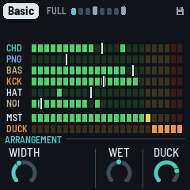
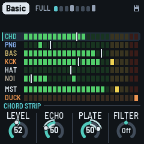
Duck is the piece's own (it was the Drums page's KNOB 4 until 1.3.0), saved with it: how far each beat pushes the rest down, letting it back in over a little more than a tenth of a second. A kick ducks it fully; a beat without one a little less, and less again while the arrangement has the kick out (a Break), so the music keeps breathing (the ghost duck). The noise is ducked deeper than the music.

The meters. A row a part, top to bottom, as the white keys 1–6: the chord (CHD), the pings (PNG), the bass (BAS), the kick (KCK), the hats (HAT: the shaker and the open hat, with the rim and the clap), the noise (NOI), and under them the master (MST). Each row is a meter of LED segments, left to right, from −48 dB to 0 dB, 2 dB a segment:
- The lit segments: the part's level as it plays, its peaks: up at once, falling back at about 20 dB a second. The parts are measured dry, as each goes into the mix (their echo and plate are in the master, not in their rows), before the duck; the master as it goes out, after MASTER.
- A lone segment above them: the peak held, for a second; then it falls back.
- The white notch through a row: the part's level setting (its strip's Level, below; OCT− / OCT+ on its page), as a fader's position, 0 at the left, 100 at the right. Turn a level and it moves; the dub mixer moves it too, where its ride has the level now. The kick's and the hats' are their own faders, 50 in the middle as the piece has them; the drums' level (OCT− / OCT+ on the Drums pages) moves both.
- Colours: green, yellow from −12 dB, red in the top 4 dB, on every row. (A test build can colour each row in its layer's colour instead, the master white, its top two segments amber and red; the release has the classic colours.)
- A muted part's row is dark (its notch kept, grey); with a solo on, the rows soloed out are dimmed, the one you hear bright.
- DUCK, under the master, a row as the others: the duck, as a compressor's gain reduction, eating segments from the right with each kick (2 dB a segment): on the bass while it plays (the deepest, the pump you hear), else on the rest of the music. Duck at 0, it stays dark.
- Red at the top of MST means the output is at full scale: the soft clip is squashing it, and a red ! lights in the header, on every page, for a second (turn MASTER or a level down).
On the Arrangement page, each key says what it did on a card in the middle for a moment (under a second, so the meters under it show the effect): a mute ("PINGS muted", in the part's colour), a solo, a move as you press it ("CHORD THROW: every stab into the echo"). A page's button leaves the Arrangement page: the keys are the scale again (the mutes and solos stay), and SEL brings it back.
Hold white 1–6 for a part's channel strip, as on a mixing desk: KNOB 1–4 that part's Level, Echo send, Plate send and Filter, until you let go. White 1 the chord, 2 the pings, 3 the bass, 4 the kick, 5 the hats (with the rim and the clap), 6 the noise: the meters' rows, top to bottom. The strip comes up after a third of a second held, or at once if you turn a knob; its name shows on the rule above the knobs ("KICK STRIP"), its row on the meters is lit behind, its knobs are in its colour, and the big ring names what you turn ("HATS ECHO"). Let go and you're back on the Arrangement page. A tap still mutes the part: the mute comes as you let go (a hold mutes nothing). (Until 1.4.0's last builds, white 6 held was the Mix page, the four levels on the knobs: each part's Level is its strip's now, the noise's too.)
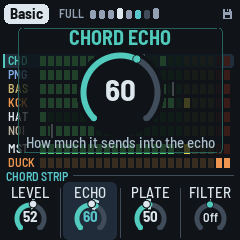
| Knob | What it does |
|---|---|
| KNOB 1 · Level | the part's level: the same as OCT− / OCT+ on its page (the noise's too). The kick's and the hats' are their own: 50 as the piece has them (×1), about 12 dB down at 0 and 12 dB up at 100; the hats' is the Hats page's Level (the shaker and the open hat; the rim and the clap go with the drums' level, OCT− / OCT+ on the Drums pages, which moves the kick and the hats too) |
| KNOB 2 · Echo | how much it sends into the echo: 50 as the piece sends it, 0 none, 100 twice as much (+6 dB). The bass sends none in every piece (0): turn it up for a dub bass throw. The hats' is the hats', the rim's and the clap's. The kick sends none in every piece (0): turn it up and it goes into the echo too (100 a full send) |
| KNOB 3 · Plate | how much it sends into the plate, the same way: 50 the piece's, 0 none, 100 twice (the kick's from 0, as its Echo) |
| KNOB 4 · Filter | a filter on the part, before its sends (so its echo and its plate are filtered too), centred like the DJ filter: 0 off (nothing run). Left, a low-pass (12 dB an octave; 6 dB while the FM-1 is near its limit, the engine shedding work, then 12 again): the part darker, from about 18 kHz at −1 to about 200 Hz at −50 ("LP 800"). Right, a high-pass (6 dB an octave, as the Low cut was): the part thinner, from about 20 Hz at +1 to about 2.5 kHz at +50 ("HP 290"); the old Low cut's 600 Hz is near +36. The chord keeps its own gentle cut at about 160 Hz under it; the kick's leaves the rumble be (its own knob, on the Kick page). (Until 1.4.0's last builds, the Low cut: the high-pass alone, 0–100) |
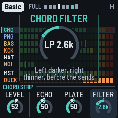
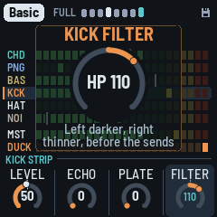
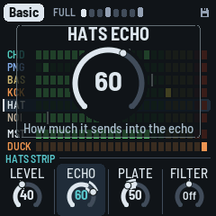
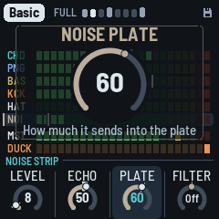
A thrown stab (and any part thrown with its black key) still goes into the echo whatever its strip's Echo, and the Arrangement page's Wet moves everything on top. The strips are the piece's, saved with it. A page's button goes to its page (HOME: the Form page). The keys, from the lowest up, are the parts (a black key a part's solo and throw), two empty white keys, the global moves, then four of the effects grid's effects; the four right-most black keys are the dub sirens. Each key that does something is lit:
| Keys | Notes | A tap | Held |
|---|---|---|---|
| White 1–6 | F3 G3 A3 B3 C4 D4 | mutes the chord, pings, bass, kick, hats, noise (and back) | that part's channel strip on the knobs (above) |
| Black 1–5 | F♯3 G♯3 A♯3 C♯4 D♯4 | solos the chord, pings, bass, hats, kick (and back) | throws that part into the echo while held |
| White 7–8 | E4 F4 | the gap: dark, does nothing | |
| White 9–12 | G4 A4 B4 C5 | the global moves: Open, Shut, Drop, Echo | |
| White 13–16 | D5 E5 F5 G5 | four effects: Time x2, Freeze, Tape stop, Stutter | |
| Black 6–7 | F♯4 G♯4 | nothing (dark) | |
| Black 8–11 | A♯4 C♯5 D♯5 F♯5 | a short dub siren: Wail, Whoop, Hi-lo, Laser (about a bar) | the slow one, looping until you let go; its page: the knobs its Pitch, Rate, Depth, Echo |
The first four black keys belong to the white key on their left: F♯3 the chord (F3), G♯3 the pings, A♯3 the bass, C♯4 the hats (C4). The kick's white key (B3) has no black key after it, so the last one, D♯4, is the kick's (1.4.0: it was the noise's; the noise has no solo or throw now, white 6 still mutes it). White 7 and 8 (E4, F4) are dark and do nothing: the gap between the parts and the moves, so you can find them without looking. (1.4.0: the gap was one key; the Siren's key went and the moves and effects moved one key up.)
- White 1–6, the chord, pings, bass, kick, hats and noise: a tap mutes the part, another brings it back (the mute as you let go: held, the key is the part's channel strip, above); lit while it plays. The levels stay as they are (a true mute: the strips' Levels don't move). They are the same mutes as OCT− + OCT+ on a layer's page (there, the drums' mute is the kick's and the hats' together): a mute made either way shows on the other. The mutes stay when you leave the Arrangement page. The music goes on underneath: a muted part comes back where it would have been.
- Black 1–5, a tap: solos. A tap solos the part: the others go quiet (their echoes and reverb ring out). Solo more than one and they play together; tap again to let one go. A soloed key blinks; the white keys show what you hear. SOLO shows in the header, at its right end. Solos stay when you leave the Arrangement page, as the mutes do.
- Black 1–5, held: throws (past a third of a second; the key goes dark while it throws, and the release solos nothing). As a dub engineer slams a part's aux: the part goes into the echo at its own level while you hold it, whatever its strip's Echo and the piece's Echo (even at 0), and the echo's feedback climbs towards its top, so the repeats stack up over each other (the loop's soft clip keeps them in); the strikes stop ducking the repeats. It comes in over about 15 ms; let go and it leaves over about 60 ms, the feedback back where it was and the repeats ringing on. The chord's also throws every stab ("CHORD THROW: every stab into the echo"), with the second head. The pings, the hats (with the rim and the clap) and the kick go in as they are. The bass goes in driven, as an overdriven aux: the echo takes nothing under about 350 Hz, so a round bass (Sub) would throw almost nothing; driven, its harmonics are heard. (1.4.0: the throws were nearly inaudible before: they went through the piece's Echo and the strip's send, the bass and the hats 10 to 25 dB under the part.)
- White 9–12, the global moves, held (lit; dark while held): - Open: the music thins and brightens over the kick: a resonant high-pass on everything but the kick sweeps up to about 400 Hz, and the chords' filter opens three octaves and sings, the echo's band-pass and the pings brighter with it. - Shut: the music goes under water while the kick keeps pumping: a low-pass on everything but the kick sweeps down to about 230 Hz, the chords' filter and the echo's band-pass closing with it. - Drop: the floor falls away: the kick and the bass out while held (the bass let go at once), both back on the next beat when you let go. The kick's mute (white 4) takes it out until you press again; Drop is the move you hold for a bar or two and release on the downbeat. - Echo: the echo pushed: everything into it, feeding back more. - Each sweeps in over about half a second; letting go eases back (to where the Filter knob is).
- White 13–16, four effects, held (lit; dark while held): Time x2, Freeze, Tape stop and Stutter, the same as the effects grid's (REC held, below), one key each and nearer to hand. They play together with the grid's.
- Black 8–11, the dub sirens (lit; dark while one sounds). One siren voice. Wail, Hi-lo and Laser are tuned to the piece's key: their turning points are the root, the fifth and the octave (the mode's fifth: a flat fifth in Iwato), and they slide between them. Whoop is out of tune on purpose: the classic dub siren box, which knows nothing of the key, clashing with it (its own pitch, A3 and 40 cents, about 225 Hz, a shade under a quarter-tone off every key's notes; turn its Pitch to sweep it into the key by ear). Each goes into the echo as the grid's Siren does (at the piece's Echo), at about its level, so its tails ring on after it. A tap plays a short one, about a bar, to its end even though you let go at once. Held past a third of a second, it turns into the slow one from where it is (no jump) and loops until you let go; then it fades over about 150 ms and the echo carries the tail. A new siren takes over from the one sounding. Wail and Hi-lo follow the tempo; Whoop and Laser don't.
| Key | Siren | A tap | Held | |---|---|---|---| | A♯4 | Wail: a near-sine tone gliding root, fifth, octave and back, lingering on each | one rise and fall over a bar | one rise and fall every 4 bars | | C♯5 | Whoop: a box's whoops, each rising an octave quickly and dropping back, out of tune | a burst of whoops, 2.5 a second (three: 1.2 seconds) | whoops on and on, 2.5 a second, their floor rising a fifth over 4 seconds and back over 4 | | D♯5 | Hi-lo: the root and the fifth swapped, square-ish (the old police siren) | a bar of swaps, one a corchea (8th) | swaps a negra (quarter) each, the pair rising to the fifth and the octave over 4 bars and back over 4 | | F♯5 | Laser: a fall from two octaves up to the root, warbling (6 a second) | one 1.5-second drop | 8-second falls, half a second on the root fading, then again |
A siren held is its own page (as a white key held is a part's strip): the knob strip shows SIREN · WAIL (or WHOOP, HI-LO, LASER) and the four knobs ride that siren while you hold it. Let go: the siren fades as above and the screen goes back to the Arrangement page. Each knob shows the big ring as it turns (its name, its value: "Pitch +3", "Rate 1/8", "Rate 4.0 Hz", "Depth 12 st", "Echo 70"); the reader says them.
| Knob | | Wail | Whoop | Hi-lo | Laser | |---|---|---|---|---|---| | 1 | Pitch | an octave down to an octave up, a note of the key a click | the same, free: a tenth of a semitone a click | as Wail | where it lands, on the key's notes | | 2 | Rate | one wail held, a note value: a semicorchea (16th) to 8 bars (4 bars; a tap a quarter of it, as many as fill a bar) | whoops a second, 0.2 to 12 Hz (2.5), tapped and held | one swap held, a semicorchea (16th) to 4 bars (a negra (quarter); a tap half of it, a bar's worth) | the warble, 0.2 to 12 Hz (6); the fall's time stays | | 3 | Depth | its top, 1 to 24 semitones on the key's notes (12: the octave; its middle the fifth, else the note nearest 7/12 of it) | how far each whoop rises, 1 to 24 semitones (12) | its other note, on the key's notes (7: the mode's fifth) | how far it falls, on the key's notes (24: two octaves) | | 4 | Echo | its send into the echo, 0 to 100 (50: as before). Past 50 the echo's feedback is pushed too, as a throw's, so the repeats stack and ring on after it (the push eases out over about a second) | | | |
The values in brackets are where each starts: the sirens exactly as they were before the knobs (Whoop's new sound aside). Each siren keeps its own four settings, as a box's knobs stay where you left them: its next tap or hold starts from them. A tap uses them; the knobs move them only while the key is held. They are saved with the project and the same for every piece (format 34; an older save gives them as they start). On the tuned sirens Pitch and Depth step through the key's notes, so a piece in another key keeps them in its own; when the scale changes they move to its nearest note. Pitch has the centred knobs' notch at 0.
The effects grid's Siren (REC held, key 15) is unchanged. Leaving the page lets a held siren go.
- The other keys (F♯4, G♯4) do nothing on the Arrangement page; MIDI notes in still change the scale.
Lock (SEL held for half a second, on any page; held again, off). The groove stays as it is: each new phrase keeps the kick's shape, the noise's groove, the drums' and the bass's phrase plan (its B bars still B: see The arrangement) and the shaker's pattern, and the bass's borrowed groove rests. The sections still come and go, the chords still move, and the stabs and the pings play on as Vary has them. LOCK shows in red in the header, at its right end, the phrase's eight cells all alike, and a card says it ("the groove kept", "the groove free"). A tap on SEL is still the Arrangement page. Lock isn't saved: the FM-1 starts with it off.
The Chords page (EDIT tapped): the chord machine, in view. The progression is eight slots. Each slot is one of three:
- a chord from the walk, in teal: the random walk over the scale's degrees (see The arrangement). It's a degree of the scale, so it follows the key and the mode when you change them;
- a chord you wrote, in white: as written, whatever the key;
- a gap, "(HOLDS)": the chord before it goes on.
Under the slots, a keyboard (C3 to G5) shows the chord of the slot you're editing, its four notes lit as the stabs play them (the root marked with a dot): white for yours, teal for the walk's, as their names. On a gap it shows the chord the gap holds, dimmer. It follows the slot as you move to it, and the chord as you change it.
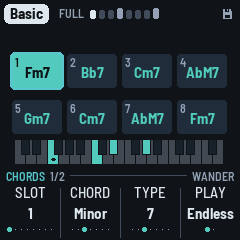
| KNOB 1 · Slot | the slot you're editing (1–8), outlined on the screen |
| Keys | its root, any note (lit on the keys). A walk's chord becomes yours, keeping its kind and type; a gap becomes a minor chord on it |
| KNOB 2 · Chord | its kind: Empty (a gap), Major, Minor, Sus2, Sus4, Dim, Aug. Turning a walk's chord makes it yours |
| KNOB 3 · Type | Triad, 6, 7, Maj7, 9, 11, Add9 |
| KNOB 4 · Play | Endless or Loop |
| ALGORITHM | the walk's character: Home, Wander or Free. Its chords (the teal ones) are walked again at once, all but the one playing; yours and the gaps stay. The character shows at the left of the knob row (no line on top any more) |
Home, Wander, Free (ALGORITHM; Wander is the default) set how the walk moves, from the most settled to the most varied. Turning ALGORITHM rewrites the walk's chords on the page straight away, so you see and hear the change; in Loop it rolls a new loop from the teal slots (turn until you like it, then leave it). Home goes back to the home chord often (about two times in three) and leans on the IV, the way DUB-1 has always moved. Wander goes home less, spreads over more of the scale's chords and rarely bounces straight back to the chord before last. Free goes home least and treats the other chords evenly.
Endless: a new piece starts with eight chords from the walk, from home. The chord playing is always slot 1. When it moves on (every Change bars, the Chord page's, or EDIT held), every slot moves up one: a gap stays a gap, your chords stay yours. The walk then writes a new chord into slot 8, so you see the chords coming and can change them before they arrive.
Loop: the eight in turn, from the one playing, a chord every Change bars, round again after the last that isn't a gap. Nothing new is written. Gaps at the end make the loop shorter. Switching from Endless to Loop keeps the eight you see, to catch a progression you like as it goes by. Back to Endless, the one playing moves up to slot 1 and the walk goes on.
Editing the slot that's playing is heard at once. The slot playing is lit; in Loop the other pages show "2/4" under the chord's name. EDIT again: the Walk page (below), and again back here; any page's button leaves the page. EDIT held (half a second), anywhere, moves to the next chord. The slots are kept with the piece.
#### The Walk page
EDIT again from the Chords page (Chords 1/2, Walk 2/2): how far the walk moves, on the circle of fifths (C at the top, a fifth a step clockwise, so neighbours are close chords and the far side is far away).
| KNOB 1 · Walk | the walk's character: Home, Wander or Free (the same as ALGORITHM, here or on the Chords page) |
| KNOB 2 · Change | how long a chord lasts, 2 to 64 bars or Hold: the Chord page's Change, the same setting |
| ALGORITHM | the walk's character, as on the Chords page |
What it shows:
- The twelve notes named round the circle, the key's bright and the others faint.
- The chord's root: a single dot, white with each kick (red in dub hold).
- When the chord changes, an arrow from the root before to the new one, fading over four bars: a step to a neighbour is a close move, a jump across the circle a far one.
- Round the outside, dots filling up on the way to the next chord (Change).
- At the left: the chord's name, the walk's character (or LOOP and where it is, "2/8"), and the eight slots' chords in two columns, the one playing lit (a gap: the chord before it holds).
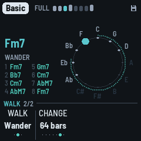
The effects grid (REC held). After a moment the whole screen shows sixteen effects, four rows of four (the knobs do nothing while it's up); the white keys from the lowest play them, each as long as its key is held (even after you let go of REC). The first key of each row is lit, to find the rows by touch.
| Row | Key 1 | 2 | 3 | 4 |
|---|---|---|---|---|
| Echo (white 1–4) | Throw: every stab thrown into the echo | Time x2: the echo's time doubled (halved if the tape is too short), gliding there and back | Tape stop: the echo's tape slowing to a quarter, its pitch diving | Swell: everything into the echo, feeding back more |
| Filter (5–8) | Low-pass (LOW on the grid): a low-pass on everything, sweeping down to 350 Hz | High-pass (HIGH): a high-pass, up to 1.3 kHz (thin, a radio) | Wah: a resonant band sweeping, 1.3 times a second | Phone: a narrow band, 450 Hz to 3 kHz, overdriven |
| Space (9–12) | Verb: everything into the plate | Crash: a dark burst of noise into the plate, eased in, a splash at the music's own level | Freeze: the cloud stops listening, its grains thick and brought forward | Wash: the dry down, everything into the echo and the plate |
| Rhythm (13–16) | Stutter: a sixteenth of the mix caught and looped | Gate: the chord ringing on, chopped in sixteenths | Siren: the dub siren, into the echo | Riser: noise rising through a band-pass, louder as it climbs |
A tap on REC alone is still dub hold; held long enough for the grid (or with a key played), its release does nothing. Each effect eases in and out. All sixteen at once is the heaviest thing DUB-1 can do: in a heavy piece it can approach the FM-1's limit (watch the Setup page's CPU).
The nudge (ENV, ARP, LFO or SEQ held for half a second). The layer's sound takes a step somewhere new: three or four of its sound values move, each up to an eighth of its range (up to 12 on a −50…+50 value), like a random walk. The walk is pulled back to the piece's recipe: the further a value has gone, the likelier its next step goes back (a quarter of the range away, always), so nudging again and again explores round the piece's sound and never wanders off. A card in the middle, outlined in amber, says the biggest change ("CHORD NUDGE", "Env amount −8"), and the page with that knob comes up, the knob lit (the layer's voice page, or its FM page, the Hats page, the Noise page: wherever it moved most; on the Arrangement page, you stay where you are).
The shake (keep holding, 1.5 s): the wild one. The layer gets another voice (the drums another kit; the chord's Noise is left to ALGORITHM) and every one of its sound values takes a big step. A red card says the new voice ("CHORD SHAKE", "Keys").
Shake everything: hold HOME for 1.5 s (without turning anything) and the chord, the pings, the bass, the drums and the noise all take a shake at once, one card for all ("SHAKE ALL"); you stay on the page you're on. Do it again and again to explore the piece's variations until one sounds right, then save it (GLO held) or keep it with Lock (SEL held).
| Held | Nudges |
|---|---|
| ENV | the chord: Attack, Colour, Reso, Decay, Cutoff, Env and Env decay; on an FM voice, its ratio and feedback too (the page shown: Chord voice, or Chord filter when Reso, Cutoff, Env or Env decay moved most, or Chord FM when the FM did) |
| ARP | the pings: Tone, Ratio, Length, Bend (an FM voice: its upper ratio and feedback); now and then one note of one loop (the page shown: Pings voice, or Pings FM) |
| LFO | the bass: Bite, Shape, Gate, Glide, the Fifth (an FM voice: its ratio and feedback; the page shown: Bass voice, or Bass FM, or the Bass page for the Fifth); its shake also moves the groove to a neighbour (Drone, Offbeat, Dotted, Sync, Roller, in that row) |
| SEQ | the drums: the kick's tune, length and punch, the hats' tone and level (the page shown: Kick, or Hats) |
| SAVE | the noise: Tone, Density, Decay, Air (the page shown: Noise voice, or the Noise page for Density); its shake: another noise character |
| FX | the Dub page's: the echo's send and feedback (smaller steps), the reverb, the plate's size, the cloud; its shake: a new echo time |
Saving (GLO held) keeps what you like; GLO held on (1.5 s) puts the piece back to its recipe. Nothing nudges by itself (1.4.0: Evolve's own nudges went with it; the sound moves with Drift, on the Form page).
The cards. Every long press says what it did on a card in the middle of the screen, for about a second: a nudge (amber) or a shake (red), the layer and what changed; EDIT held, NEXT CHORD (gone the moment the chord changes); EDIT held on, NEW CHORDS (red); GLO held, SAVED (teal); GLO held on, RESET (red); SEL held, LOCK.


4 The screen


- The header, where we are (1.4.0): the piece in a tag, always (its key is on the Key page, HOME again); beside it the phrase: the section playing (FULL in grey; BREAK, GROOVE and THIN lit up; in a song, INTRO and OUTRO) and the phrase's eight bars, a cell each, lit up to the bar playing, the one playing in teal and flashing white on each beat. Bars 4 and 8, the B bars of the phrase plan (see The arrangement), are taller and brighter, ahead and played; under Lock all eight are alike. On the phrase's last bar, cell 8 blinks when the next phrase brings a change: a new plan, another kick shape or another section. Resting, the cells are dim, with a play triangle after them. With a long piece name the cells get a little smaller; on Setup, where the load takes the room, the word may be left out. - On the right, only what matters now: HOLD and LOCK in red (dub hold, Lock) and SOLO in yellow while they are on; a small disk when there are unsaved changes; EXT while DUB-1 follows a MIDI clock; a red ! for a second when the master clips (the output at full scale: the Arrangement page's meters show where; it is not Setup's grey "!n", the audio's dropouts, beside the CPU's load); the battery when it is low (under a fifth) or charging on USB (its bars filling in turn), and always on Setup, with its charge. - The tempo isn't there any more: it lives on the Key page, and the big ring shows it while HOME held and SELECT turn it. - In a song, a line along the header's bottom edge is the whole song, each part in its own hue: the intro teal, the main a light grey, the outro coral; each dim ahead and bright where already played, a white tip where the song is. - Messages ("ADDED F#", "NEXT CHORD ON THE BAR", "DUB HOLD ON", "KICK OFF") take the header for a moment; a knob turning or a level changing doesn't: its big ring names it.
- Above the knobs, the rule: at its left the page's name in teal and, in grey, its place among its button's pages (CHORD VOICE 2/5: the second of five); at its right the page's voice, kit, character or walk (SAWS, TIGHT, VINYL, WANDER; on an LFO page where it goes, TO RESO). Always there: a knob's help line shows under the big ring, in the middle.
- The main area's corners are free (1.4.0): the pictures (the ripples, the scope, the spectrum, the tape) reach them. The way to the next chord is on the Walk page.
- The ripples: each stab drops a ring in the middle that spreads out to the screen's sides (since 1.4.0: the whole width, up to the header and behind the chord's name, above the lanes) and fades. Its outline is the sound itself at that moment, its wave wrapped round the circle: a soft pad a smooth ring, a bright stab a jagged one. The echo's repeats follow it, a ring each echo time, each as strong as the echo's output really is then (measured, not worked out), and a little smoother each time round, as the tape darkens them. So a long Feedback makes long trains of rings, a short one a single ring, and a filtered, ducked or dropped echo shows as it sounds. A stab thrown into the echo makes a thicker, brighter ring. In dub hold the rings turn red, and a new stab makes a single ring (the echo plays what it holds). Each bass note drops a gold ring too (no repeats: the bass hardly goes into the echo), so with the chord muted the bass still shows. The chord's name is in the middle, a soft grey that flashes white with each kick, as strong as it hits, on every page that shows it (red in dub hold). A new chord comes in big and teal, bouncing big, small, big, small, and settles to white over about a second. Around it the four ping loops each circle as a blue dot, one step a turn's step: its place is where the loop is, and it lights up when the loop plays a ping (dim, a ghost, between). The loops have different lengths, so the dots drift apart and meet again. Under it all, the noise: a grey speck for each of its hits you can hear, and for each dry click (on its side), as bright as it is loud, gone in a moment; a strong hit a brighter one. More Level or Density (the Noise page), more specks. The specks show on the whole piece's ripples and on the Noise pages (there alone), not on a layer's page.
- ALGORITHM (on any page but a layer's, the Noise pages, the LFO pages or the Chords pages) changes what the middle shows: the ripples, a scope, a spectrum, and then the tape (new in 1.4.0); then the ripples again (turned back, the other way round). Each piece keeps its own view, saved with it: Haze on the spectrum, say, and Pressure on the scope. With the scope, the spectrum or the tape showing, the chord's name moves to the top. (1.4.0's test builds also had an echo trail and the fifths here: the echo trail is gone, the fifths is now the Walk page; a piece saved on either comes back on the ripples.)
- On a layer's own page (Chord, Pings, Bass, Drums) and its voice pages, the middle shows that layer alone: the ripples its notes, in its colour (the stabs on the Chord page, the pings with their loops' dots on the Pings page, a ring a bass note, a ring a drum hit), and the scope or the spectrum its sound, dry. Below it, that layer's own lane, large (below), with the seven meters at its left, the layer's own bright and the others dimmed. The Noise pages follow it too, with the noise alone: its specks, or its scope or spectrum. Form, Dub, Echo and the other pages show the whole piece (the Arrangement page shows its meters). - The scope draws the output (left and right mixed) as a thick line, nearly the screen's width. Each trace starts on a rising zero crossing so the picture stands still, and the two traces before it fade behind. Its height follows the level, so a quiet passage still fills it. - The spectrum splits the output into 18 bands, from the sub bass (43 Hz, left) to the hats (11 kHz, right). Each band is a column of segments: teal, then brass, amber and red at the top. The columns jump up with the sound and fall back slowly. A white cap stays at each column's peak for a moment before it drops. The columns span nearly the screen's width. - The tape draws two reels at the screen's edges, the tape running from the left one to the right past three heads: the record head lit with the output, the play head with the echo coming back. The reels turn with the tempo, the smaller one faster. Through a song the tape winds from the left reel to the right one, so the reels show where the song is; in Endless it winds back and forth over 128 bars. The tape is in the song part's hue (the intro teal, the main light, the outro coral), brown outside a song. Its counter, between the reels, shows what no other screen does: on its left, where the song is (INTRO, MAIN, OUTRO, END once a song is over, or ENDLESS) and the bars left of that part; on its right, the time since PLAY (minutes and seconds) and, in a song, its whole length at this tempo ("OF 7:20").
- The levels in full and the duck are on the Arrangement page (SEL), on its meters; the other pages show a short meter at each lane's left (since 1.4.0; the duck meter is the Arrangement page's).
- The lanes (Form, Dub, Echo, Setup, Key): the bar as it plays, sixteen steps, seven rows, top to bottom: CHD the stabs (teal), PNG the pings (blue: the sixteenths a loop's note falls on this bar, those played and those to come), BAS the bass (brass), KCK the kick (amber), HAT the hats (white: the shaker and the open hat), R/C the rim (pink) and the clap (yellow), side by side when both hit one step, and NOI the noise's hits this bar (grey, a ghost dimmer). A hit that only sometimes comes (the clap in Auto, a lane's Chance under 50%) is a ring, filled when it plays. The step playing is lit. A layer that's out (in a Break, muted on the Arrangement page, or at level 0) has an empty row at once. In the stabs' row, rings show where the echo's repeats land, fainter for each, as the echo's time and Feedback have them; each flashes white as the playhead reaches it.
- The meters: at each row's left, a short level meter in the row's colour, over a dim track: the chord, the pings, the bass and the noise as the Arrangement page's meters measure them (−48 to 0 dB), the kick, the hats and the rim and clap from their own hits, jumping up with each and falling back (the R/C meter yellow when the clap was the last). A glance at the mix. A muted part's meter is dark; soloed out, dimmed (the kick and the hats each their own: the rim and clap follow the hats). On a layer's pages and the Noise pages the same meters stand in the same place, without the notes, the page's own bright (the Drums pages: KCK, HAT and R/C) and the others dimmed; its large lane to their right.
- Bottom: a rule (on a layer's page, the voice's name at its left: the Noise page's character, the Chords page's walk, the Chord LFO page's Destination, TO CUTOFF), then the page's four values, one for each knob: a dial (or, for a switch, its positions as dots) and the value. The one you're turning lights up, and while it turns, the rule says what it does ("HOW LONG THE REPEATS GO ON"); a moment after, the rule is back. A grey knob does nothing here (on an FM page, the voice not FM, the Chord FM page's Colour still turning; or Ratio on a two-operator algorithm).
- The cards: a long press's card, in the middle (see The cards).
- The big ring: a knob turning, in the middle: its value large inside, its name over it in large capitals, in its layer's colour (teal elsewhere; the page's name steps aside for it), and under the ring, in one or two lines, what it does; a 0–100 knob fills from the start, a centred one from the top, a switch shows its choice by name; a knob with zones (Motion, Hits, the bass's Density) is in segments, the zone's name under the value (Motion's three names round the ring too) and its sentence under the ring. SELECT's filter shows there too (the amount, Shut or Open), and OCT− / OCT+'s level (see Controls), and ALGORITHM's choice (a voice, a kit, the noise's character, the chord's LFO's Destination, the screen's view). One ring at a time, the last one turned; it fades a second after; a new page clears it.
- The Bass page's lane: the bass alone, large, under the ring: this bar's notes as bars as long as they hold (an octave note higher), the groove's other notes (those Density leaves out, or a B bar's) as outlines; at its left, A and B, the phrase's two bars (B: bars 4 and 8), the one playing lit. Turning Groove or Density shows there at once, under the big ring.
- The Chord page's lane: the chord's stabs alone, large: each a bar as tall as it was struck (those still to come this bar at a middle height), its tail fading for as long as it rings, the echo's repeats as rings where they land, as faint as they are; a thrown stab the tallest, in a white frame, its repeats brighter. Turning Density shows there at once.
- The Pings page's lane: the four loops, a row each (13, 17, 23 and 29 eighths, each across the lane, so you see them drift against each other), each note a dot at its pitch, the step each loop is on lit, brighter as it sounds. Turning Density shows there at once.
- The Drums page's lane: what its knobs move: the kick, a row (orange: a ghost dimmer), and the hats, a row (white: the shaker filled, the open hat an outline), all the same height; A and B at the left. Turning Density or Hits shows there at once. (The whole kit is on the Pattern page.)
- The Noise pages' lane: its groove, two bars of sixteenths, a row each (1 above 2), each hit a block as strong as it is (a ghost lower), its ring a tail fading as long as it rings (Decay); 1 and 2 at the left, the bar playing lit. A new groove (Density, a phrase's start) shows when it's drawn; the dry clicks come at random and aren't shown. (The noise's LFO shows on the Noise LFO page.)
- The LFO pages' picture, across the screen (1.4.0, the user's): the present in the middle, a dot on what's heard (white while playing) with a dotted line down through it. At the left, what it did: what you heard bold in the layer's colour, older fainter, the wave's part alone a thin white line and the wander's part a thin pink one; at the right, where the wave is going, thin and dim (the wander can't be known ahead). 4, 8 or 16 bars each side, as the Rate needs; under it the bars ticked, taller where the wave's cycle starts (on the wander alone, where a phrase starts). The faint line in the middle is the knob's own value (the chord's: its Target's knob, Cutoff, Reso or Colour; the noise's filter half open); the dotted lines above and below are the reach of the wave and the wander together, at one scale (the most it can reach: Drift and the LFO page's Drift grow and shrink it), with that reach at the left edge in its Target's units ("890 Hz", "290 Hz"; Reso's "+15", "−15"). No title over it: the knobs say the Rate, the Wave and the Target. See The LFO pages.


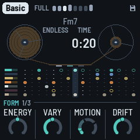

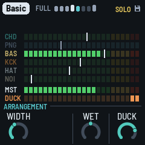
5 The layers
DUB-1 plays four layers from one scale and one chord, on a grid of sixteenths.
- Chord: the stab. Four voices struck together, each two saws a few cents apart, or an FM electric piano (Keys), through a resonant low-pass that opens with each stab and closes again, then a soft clip. The stabs fall on a Euclidean pattern over the bar, off the beat. One voicing (an open minor 7th, root, fifth, seventh and tenth; or a ninth without its fifth) is shifted whole to each new root, the way a chord memory does, its root kept between C3 and B3. Much of the stab goes to the echo (its Wet, the piece's, sets the dry against it). Every so often (Change, on the Chord page) the chord moves to another degree of the scale: in a seven-note scale, most often the fourth, then the seventh, the fifth and the sixth; away from home, back home about two times in three. It never moves to a half-diminished chord.
- Pings: short FM blips played by four loops 13, 17, 23 and 29 eighths long. Each loop holds a few notes of the chord (now and then a passing note, or a note an octave up), each in its own register, place in the stereo field and shade of tone, so the loops slide against each other. They go mostly into the echo.
- Bass: a sub on the chord's root, sometimes its fifth, in the sub's band (E1 to Eb2 at home), on one of five grooves: Drone (one long note a bar), Offbeat (the four off-beat eighths), Dotted, Sync and Roller, all its notes or fewer (Density), in the phrase plan (see The arrangement). It slides briefly from note to note. It stays dry, out of the echo.
- Drums: a kick (a sine falling fast onto the key's root, F1 to B1, 44 to 62 Hz; below F its fifth; with a click), a shaker on the sixteenths, an open hat off the beat, and a rim (two short tones and a click, mostly sent into the echo, so it echoes away: the dub snare), on two and four once Hits is 70 or more (its Rim zone); and a clap (three quick bursts of noise and a tail, into the plate), rarely: on two or four now and then, about one chance in twenty (a little more with the drums' Vary), in Full and Groove phrases. The kick plays a shape a phrase at a time: none, the downbeat alone, one and three, four with two and four ghosted (10 dB down), or four on the floor. Kick (the Drums page's switch) is where the shapes centre; on Four it's four on the floor in every Full or Groove phrase. The kick ducks everything else (Duck, the Arrangement page's KNOB 4), and stays out of the echo; the hats send a little to it. On a beat with no kick the music still breathes, ducked a little less (less again while the kick is out, as in a Break): the ghost duck, so the pumping goes on whatever the kick does. The drums play in the phrase plan too.
Then the space: the tape echo (up to 5.6 seconds, synced to the tempo), a granular cloud and Dattorro's plate reverb. The cloud records what goes to the reverb (the last 0.74 seconds, at a quarter of the sample rate) and plays it back in grains: up to six at a time, each 80 to 250 ms from anywhere in what it holds, at a random place in the stereo field, now and then an octave down (rarely up). The grains go into the plate, so they bloom into its tail, and the plate's tail goes back into the cloud: with Cloud (the Echo page) up the reverb turns into a moving wash, longer with a bigger plate. The grains come thicker as the filter opens, and in a Break there is more of the cloud. Dub hold freezes the cloud as it does the echo.
The echo dissolves. What goes into the tape is band-limited first (Tone, on the Echo page), and the first repeat comes back clean, a copy of the stab on its time. Each repeat after it goes through a chain of allpass filters on its way round (Blur): every repeat comes back softer and darker than the one before, until it melts into a wash. Each new stab pushes the returns down (by up to 6 dB, back over about 150 ms), so the repeats are heard in the gaps between the stabs, not over them; a thrown stab's repeats ride over. In the feedback, a band-pass also makes each repeat thinner and darker, and moves with the arrangement. Feedback (the Dub page) is how long the repeats go on, in seconds: the loop's gain follows the echo's time, so a long echo dies away as soon as a short one. A throw, the Arrangement page's Echo key and the grid's Swell push it further; a soft clip lets the feedback pass 100% then, so the echo swells on itself without running away. The echo plays from one head, its right side a few milliseconds behind its left (Width, the Arrangement page's: 8 ms at 50), so the repeats spread wide without changing their rhythm; a second head, at three quarters of the loop, joins in only while a thrown stab rings, to the right. With Drift up (the Form page's), the heads wander across the field, and every so often the second head slides to another part of the loop (two thirds, a half, three eighths, a quarter), bending its repeats in pitch on the way. The stabs and the pings are widened too, each side taking a little of the other's sound a few milliseconds later and slowly drifting (with Width), so the two sides differ without the voices being panned further. Under about 80 Hz the mix stays mono.
Under it all, the noise (the Noise page): a crackle groove that rings on the chord, and a quiet hiss (see SAVE: Noise). It plays only while the music plays, fading in and out over about half a second.
Dub throws: now and then a stab is thrown hard into the echo, which pushes the feedback up for a moment: the repeats come back louder, and the stab's dry is 6 dB down, so it's the echo you hear. Throws (the Chord page) sets how often: at 50, about one stab in eight; at 100, about one in three; at 0, none but the last stab of a fill, which is always thrown. There are more in a Break. How many get through is the piece's own looseness (its recipe's, on no knob): the tighter pieces throw fewer. And they follow the chord's Vary (the Form page's plus the Chord page's trim, 1.4.0): at the piece's own as its recipe has them, more as it rises, fewer as it falls, none at 0 or Hold (Vary 0 is no variation at all).
Vary (the Form page) keeps the patterns moving: every two bars the stab pattern may turn a step or gain or lose a stab; stabs drop out of a bar, and now and then a whole bar has none, the echo carrying it (about one bar in five at Vary 82, never in a Break); at a phrase's start the shaker's steps may trade places or gain or lose one, and the drums' and the bass's plan is drawn again more often (the bass gets an octave note more often); a ping changes note or moves at the end of a pass, a ping loop sits a pass out, and when the chord moves it may change voicing. It also widens how far the kick's shape wanders from Density. As Vary goes to 0 all of this stops: at 0 every stab plays every bar, the kick keeps its shape and the phrase plan stays as it is. Each layer's own Vary (its part page) is a trim on it: more or less of it for that layer, or Hold.
The piece's looseness (1.4.0: each piece's own, its recipe's; Evolve set it before) is how the playing sits: each stab its own cutoff, a little darker or brighter; in Auto more of the hats rest and lean later; the bass's late notes; and the throws above. Basic, Fog, Concrete and Night Drive are the loosest; Steppers, Pressure, Chamber and Haze tighter, in that order. (The throws also follow Vary: above.)
6 The arrangement
DUB-1 plays in phrases of eight bars. Each phrase is one of four sections:
| Section | What plays |
|---|---|
| Full | Everything. The filter sweeps somewhere between a little dark and open. |
| Break | The kick, the bass, the shaker and the open hat out; the music still breathes on the beat, lightly. The filter goes dark, then from the third bar opens up over two bars or so. Throws are more likely. The noise's hits fewer, ringing longer. |
| Groove | Every other stab of the pattern; the filter in the middle. |
| Thin | No bass, no shaker; the kick's shape a step sparser. The filter a little darker. The noise's hits fewer, ringing longer. |
In the last bar of each phrase, the next one is chosen. Motion has three zones, each adding a new kind of event (its ring in segments; turning it, the big ring names the zone and says what it adds):
- Breathes (0–39): the loop holds. Full only, phrase after phrase; the music moves by its filter, its echo and its texture, as the classic records do (how much: the Form page's Drift, not Motion). At 0 nothing ever leaves. Above it, the dub mixer's moves (a part ridden out and back, an echo swelled: see the dub mixer), about one a minute at 40, and the kick out for a bar or two inside a phrase (two bars four times in ten), about once in two minutes at 40: never on the phrase's line (from its second bar to its seventh), only in Full or a Groove, not in a piece's first two phrases or a song's intro or outro, not under Lock or dub hold; the bass plays on through it. Both grow straight from none at 0.
- Sections (40–69): variations. Groove and Thin phrases join, on the phrase lines: rarely at 40 (one in twenty of the phrases that may leave Full), more often as Motion rises (half of them at 70); the kick half-time at most, never gone. The moves and the drop-outs go on, a little more often.
- Breaks (70–100): Breaks too. A Break now and then (the kick and the bass out for a phrase): none at 70, growing to six departures in ten at 100. From 70 a Full phrase may also draw the kick's shape None.
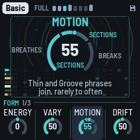
Between two departures there are always at least four phrases (32 bars) of Full. From any other section it goes back to Full three times in four. The Arrangement page's Drop breaks it by hand at any Motion; Energy (the Form page) only leans it (far down a Groove becomes a Thin, far up a Break becomes a Groove).
Fills: the last bar before the kick comes back from a Break is always a fill; from Motion 40 a phrase ends with one when the section changes, and now and then otherwise (more often with Motion up); under 40, never. In a fill the kick (if it's playing) drops out for the second half of the bar, the open hat plays (if Hits gives it any steps), and the last stab is thrown into the echo.
The sweep: the arrangement moves a slow filter sweep, from dark to open, and the Form page's Drift sets how far it goes (at 0 it stays put, but a Break still goes dark, a Thin and a Groove a little). In Full it goes to a new place every 6 to 20 bars, off the phrase's line, gliding there over 3 to 7.5 bars (Basic's quicker, every 4 to 14 bars over 2 to 5, as BCD's filter moves; a piece you changed in a project saved before 1.4.0, format 35, keeps the old pace, every 4 to 14 bars over 2 to 5: see Saving). A Break goes dark, then opens from its third bar. It opens the stabs' filter (up to an octave and a half either way) and its resonance, moves the echo's band-pass, thins the pings in the dark, moves the noise's tone and takes a little off the reverb when it's open.
The kick, a few phrases at a time: the kick takes a shape (none, the downbeat, one and three, four with two and four ghosted, four on the floor) and keeps it for two to six phrases (fewer as Vary rises; at 0 it keeps it), drawn round the Drums page's Kick: the nearer a shape is to it, the likelier. On Four it's four on the floor in every Full or Groove phrase, ghosted or half in a Thin. Turning Kick takes effect from the next bar. Under Motion 70 its shape is never None in Full (Breathes' drop-outs aside, a bar or two). A piece starts on four on the floor for its first two phrases, then comes down to Kick over the next six, and after a Break the kick comes back whole. Vary lets the shape wander further; Energy (the Form page) moves it. With the Pattern page on Pattern, your kick lane plays instead. The shape is chosen in the phrase's last bar (dot 8 blinks if it changes), and Lock keeps it.
The phrase plan (the drums and the bass): a phrase plays A A A B A A A B. A is the main bar, the same every time; B, on bars 4 and 8, is a variant, drawn once a phrase, either sparse (the kick on the downbeat alone, the shaker on the eighths, no open hat, the bass on every other of its notes) or busy (a ghost kick just before the next bar, the hats all in with a pickup, the bass's whole groove and a pickup into the next bar, from the bass's Density 30, its Pickups zone; under it the bass's B bars are all sparse). At Density 100 the kick stays four on the floor in a B bar too. Which of the hats' and the bass's notes rest (Hits, Density and the piece's looseness), the hats' feel (each step's accent and how late it comes) and, now and then, one bass note an octave up are drawn once a phrase too, the same every bar. At a phrase's start the plan is kept (a motif that comes back) or drawn again: more often as Vary rises (at 88, about half the time; at 100, four times in five), never at Vary 0. Lock keeps it. The screen marks the B bars (dots 4 and 8, brighter) and blinks dot 8 when the next phrase brings a new plan.
Songs: an intro, the main, an outro
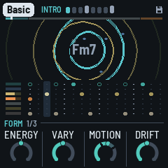
DUB-1 plays for ever, starting full, as it always has: that's Endless, the Song mode it starts in. Set Song (GLO again, the Song mode page) and a piece becomes a song: PLAY starts its intro, the parts coming in one by one; then the main, the piece as Endless plays it; then the outro, the parts leaving; then silence, the last echoes ringing out, and PLAY goes off by itself. Set plays the same, then the next piece, from the piece you're on to the last (Haze); after it, DUB-1 rests. How one piece hands over to the next is the set's Transition (on the same page, KNOB 2):
- LP (as an album): each song ends, PLAY goes off, the tails ring out, and the next piece starts from its intro about six seconds on.
- Segue: no stop, no wait. The next piece starts on the bar after the outro, the old one's tails under it. The last bars change for it: the chord's dry leaves over the outro's last five bars to its last, while its stabs go on into the echo (pushed, every one thrown); two bars before the end the chord is struck on the downbeat and the echo is held on it, as REC's dub hold does; the outro's last bar is the echo's alone (the next piece is set under it, unheard); the next piece starts on the downbeat under the held echo and the plate, and the hold lets go after its second bar. Its intro plays as from its second phrase, as a Mix's (below): its kick, its bass and its noise as that phrase has them, from the downbeat; its chord, pings and hats no sooner than the hold lets go, so the old harmony is the echo's alone for those two bars. The kick plays on (one and three) to two bars before the end and leaves over that bar. The tempo is the next piece's from the outro's last bar, as the next piece is set under it; the echo's time glides to it, as a tape slowing or speeding up (about 5% at most: under a semitone).
- Mix: a DJ's hand-over. Over the eight bars before the outro's last the tempo glides to the next piece's, and the echo's time with it, so the echo keeps time; the last bar is at the new tempo. The kick plays on to the end, as a DJ's outgoing record: the piece's own beat to the outro's half, then one and three, out over the bar two before the end. The chord's dry leaves over bars 7 to 3 before the end, the echo keeping its harmony (pushed, every stab thrown); the echo is held on the stab two bars before the end, as Segue. On the next downbeat the next piece's pulse: its kick at full level from the first beat, one and three, then four on the floor, and its noise, faded in; its bass a bar later at the soonest; its chord, pings and hats two bars later at the soonest, once the held echo has let go (after one bar) and faded: the old harmony is in the echo alone, gone before the new chord comes. Its intro plays as from its second phrase: the parts the first phrase would bring come in on those steps, the rest a phrase sooner; its length, and where its main starts, are as Intro has them. Over the hand-over the echo is never louder than the music was.
In all three the old piece's notes end cleanly (MIDI out gets an All Notes Off at the change). The tape view's TIME starts again with each piece, as its song line does. PLAY stops a set by hand, also while a Segue or a Mix hands over. Song mode and Transition are the player's, as Tune: the same for every piece, and saved.
How long each part is, and how the intro goes, is the piece's own, on the Song page (HOME again): the Intro, the Main and the Outro in bars, a phrase (8 bars) a click, and its Kind:
- Ambient first (Fog, Haze, Chamber, Night Drive): the noise and the chord's wash from the first bar, then the kick, sparse, a few bars on, the bass just after it, then the pings, and the hats last.
- Pulse first (Steppers, Pressure, Concrete, Basic): the kick, sparse, and the bass from the first bar, then the chord, the pings, the noise, and the hats last.
In the intro each part comes in at its place in that order, spread over the intro and not on the phrase lines (a bar or so either way), each fading in over two to four bars (the first ones, on the downbeat, over one or two: the song is heard from its first bar). The kick plays the downbeat alone, then one and three, then four on the floor by the intro's end; the hats come in last with a few of their hits, more each bar, to the piece's own. The chord's filter starts about an octave darker and opens to its Cutoff, and the echo is a little wetter at first, so the wash leads. There are no Breaks, Grooves or Thins in the intro: the arrangement starts with the main, the kick on four for its first phrases as a piece's opening always is.
In the outro, the mirror: the hats leave first, then the pings and the bass; the kick thins (one and three, then the downbeat alone) and stops; the chord and the noise stay longest. The pulse holds through most of it, as a record's outro thins (the bass to about four fifths of the way, the kick a little longer), so it is not much quieter than the main until its last quarter; for the last bars every stab is thrown into the echo and the noise goes into it too, fading, so the song ends on the echo's tails and the hiss, then silence. No sections in the outro either. (In a Set's Segue or Mix the kick stays to the last bars: above.)
Outro now: hold HOME and press PLAY: the outro starts from the next phrase, in any mode. In Endless too: a way to land any piece by hand (it plays the Song page's Outro, then rests). Again, in the outro or while it waits: back to the main (in a song, for four phrases at least, then the outro as planned; in Endless, on as ever). A card says which. In a Set's Segue or Mix, called in the intro, the outro is as long as the intro had been (a phrase at least), and the chord, even if it never came in, is thrown into the held echo at the end.
The knobs work as ever during a song: what you turn is kept, and the song's moves are around it (each part's fader, the filter's and the echo's offsets), never on its values. Turning Main as it plays moves the outro (if it's already past it, to the next phrase); turning the Song mode to Endless lets the song go, the parts back in, playing on. A song's lengths with the defaults (32, 160 and 32 bars) make about 7 minutes at 122 BPM, the intro and the outro about 29% of it (the records' run from 3% to 37%).
7 The pieces
PRESETS chooses one of eight pieces. Each is a recipe for the whole machine: the layers, the sounds, tempo, key and mode, the groove, the space, how busy it is and how far it moves. Each remembers how you left it. Hold GLO for 1.5 s to put the piece you're on back to its recipe. Tune, MIDI out, Lights, the Song mode, a set's Transition, Values and the dub sirens' knobs are the same for all.
| Piece | What it is |
|---|---|
| Basic | F Dorian, 122, after Basic Channel's BCD: held, saw stabs, short, into a clean dotted-eighth echo, the dry forward, almost no hats, narrow and dark, the kick on the floor; a new chord every 64 bars. |
| Chamber | A minor, 128, after Fluxion's Vibrant Forms: one chord that never moves (Change on Hold), warm organ stabs up front, a long half-note echo, a drone bass, a ghosted four (two and four soft), the steadiest loop, the noise ringing on the key (Room). |
| Steppers | D Dorian, 126, after Maurizio's M-Series: the most frozen loop, one chord held, short saw stabs, a dotted bass, the open hat on the four "ands", real swing, clean. |
| Fog | G minor, 120, after Echospace's The Coldest Season: pad stabs lost in a quarter-note echo and a big plate, very wide, hiss (Tape), offbeat hats, a drone bass, a kick that comes and goes, a Thin or a Groove now and then (Motion 42), no Breaks; the chord moves every 64 bars. |
| Concrete | C pentatonic minor, 136, after Monolake's Hongkong: the fastest. Chords stacked in fourths, short bright noise stabs, glassy pings over them, a rolling bass, loud hats, a clean dotted-eighth echo, deep filter sweeps, a vinyl crackle. |
| Night Drive | Bb Dorian, 120, after Intrusion's The Seduction of Silence: FM keys, more pings, an offbeat sub bass, a dotted-quarter echo, very wide, a filter that's played and LFOs that wander far; parts ridden out and back now and then, the kick out for a bar or two (Motion 28), no sections; a new chord every 32 bars. |
| Pressure | E Phrygian, 126, after Porter Ricks' Biokinetics: it never breaks; the kick and the bass forward, one chord held, a wide tape-noise bed under it, wide. |
| Haze | Eb major, 116: the sparse intro. Pad stabs, the longest, the most echo, pings an octave up and the most of them, a kick that comes and goes, dry and dusty (Dust), wide; the loop held (Motion 4), no sections. |
The pieces' echo tails run from about 4 to 8 seconds.
8 The pages
One page a part, each on its own button, with four values on KNOB 1–4. The buttons sit on the panel as Dub (FX), Chord (ENV), Bass (LFO), Setup (GLO), then Form (HOME), Noise (SAVE), Pings (ARP), Drums (SEQ). This chapter takes them by layer.
Each layer has the same pages, its button pressed in turn (DUB-1 1.4.0): first its part, what it plays and how that changes (its Density, how many stabs, pings, bass notes, kicks or noise hits, and its Vary, how often its part changes); then its voice, how it sounds; then, for the chord, the pings and the bass, its FM page; then the chord's and the noise's LFO. A knob the layer doesn't have is left empty, so the same thing sits in the same place on every layer.
| Layer | Its part | Its voice | Then |
|---|---|---|---|
| Chord (ENV) | Density, Throws, Change, Vary | Chord voice: Attack, Decay, Colour, — | Chord filter (Cutoff, Reso, Env, Env decay), Chord FM, Chord LFO |
| Pings (ARP) | Density, Vary, —, — | Pings voice: Octave, Tone, Length, Bend | Pings FM |
| Bass (LFO) | Groove, Vary, Density, Fifth | Bass voice: Octave, Shape, Gate, Glide | Bass FM (its Bite) |
| Drums (SEQ) | Kick, Hits, Vary, — | Kick: Tune, Length, Punch, Rumble | Hats: Level, Tone, Length; Pattern |
| Noise (SAVE) | Density, Vary, —, — | Noise voice: Air, Tone, Decay, Width | Noise LFO |
Vary, on every layer's part page, is a trim on the Form page's Vary (1.4.0): that layer's amount is Form's Vary plus its trim. The ring starts at the top: 0 follows Form's Vary (each piece's trims are set from its records: Basic's all 0, Pressure's chord, pings and drums −45, nearly still); to the right, that layer more restless than the rest, up to +50; to the left, stiller; at the far left, Hold, the ring's start marked and the word inside it: that layer never turns, whatever Form's Vary says. A trim counts in the knob's steps, added to Form's Vary on its scale (see HOME: Form). (Each layer's Vary before 1.4.0 was a factor on Evolve, 50 as Evolve alone: an older project's are kept as the trims that sound the same.) What changes is each layer's own: the chord's stab pattern, the pings' loops (a note moved, a pass sat out), the bass's plan (its phrase's figure, the octave note), the drums' (how long the kick holds its shape and how far it wanders, the shaker's steps trading places, the clap), the noise's groove (drawn anew, or kept).
The layers' levels aren't on their pages: OCT− / OCT+ set them on each layer's pages (the noise's on the Noise pages), 5 a press, and both together mute it (see Controls); the Arrangement page's meters show them all, and each part's level, its sends and its Filter are its channel strip there (white 1–6 held: the kick and the hats each their own).
The voices
On a layer's page, ALGORITHM steps through that layer's voices (after the last, the first again). The voice's name shows at the left of the knob strip, and a message says it ("VOICE Organ"). Each piece keeps its own.
| Page | Voices |
|---|---|
| Chord (ENV) | Saws (two detuned saws a voice), Keys (an FM electric piano), Organ (four drawbars, longer), Pad (the saws swelling in, long), Bell (FM at 3.5, the clang dying first), Tonewheel (a second organ: drawbars, a quick percussion and a key click at each strike, a rotary speaker turning left and right), Noise (noise through the resonant filter, a little saw under it) |
| Pings (ARP) | Blip, Marimba (a wooden bar), Glass (long and bright), Wood (a knock), Drop (the pitch falling from an octave up) |
| Bass (LFO) | Sub (a sine and a little of its octave), Punch (FM, four operators stacked: a thump in the first 90 ms), Rubber (FM, two pairs, one an octave under, op 4 feeding back), Pluck (FM at 3, gone in 50 ms), Growl (FM at 1: a bite at each note) |
| Drums (SEQ), the kit | Tight, Deep (long, 808-ish), Punch (short and hard), Soft (a muffled thump, no click), Dusty (darker, noisier hats) |
The voices are matched in level, so changing one keeps the mix.
The FM pages
Keys and Bell (chord), every ping voice, and Punch, Rubber, Pluck and Growl (bass) are FM voices: sine operators modulating each other, as in the FM-1's own firmware and the 4-operator FM synths. The layer's button pressed a third time (after its voice page) opens its FM page. On a voice that isn't FM (Saws, Organ, Pad, Tonewheel, Noise; Sub) the page says so and names the FM ones: turn ALGORITHM there to pick one. Until you do, Algo, Ratio and Feedback are grey and do nothing when turned (what you set on an FM voice is kept for when you come back to one). The fourth knob is the chord's Colour on the Chord FM page and the bass's Bite on the Bass FM page: every voice's, so they turn whatever the voice ("IS NOT FM: ITS COLOUR ALONE", "ITS BITE ALONE"). On the Pings FM page (every ping voice is FM) the second is the pings' Ratio (the modulator's, from harmonic to clangy) and the fourth their Upper (operators 3 and 4's pitch, the other pages' Ratio).
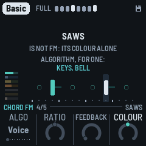
- Algo: which operators modulate which. Voice (the voice's own), or one of the classic eight 4-operator algorithms (1: a stack of four; 5: two pairs; 8: four sines side by side), or 2-op (one modulator into one carrier). The screen draws it: the carriers (heard) on the line, each modulator above the one it modulates, operator 4's feedback as a loop. Its ten positions show as dots.
- Ratio (the Pings FM page's Upper): operators 3 and 4's pitch against the note, from half to twice the voice's. On a two-operator algorithm (2-op, or a voice's own: Pluck, Growl, and every ping voice but Glass) there are no operators 3 and 4, so it's grey and rests. (The Pings FM page's own Ratio is its modulator's: the ping from harmonic to clangy, a step of the ratio at a time.)
- Feedback: operator 4 modulating itself, more than the voice's own (0) towards gritty, and noise.
- Colour (the chord's): as each voice has it: the saws' detune, the FM voices' brightness (the modulators' level), the organs' upper drawbars, the noise against its saw; −50 to +50 around the voice's own (0). The Chord LFO can move it (its Destination, below).
- Bite (the bass's): the drive, clean to growling, on every voice, and on the FM ones their bite (the modulators' level); −50 to +50 around the voice's own.
Algo and Ratio are relative to the voice (Voice, 0); Feedback starts from the voice as it is at 0. Each stays when the voice changes, and is kept by the piece.
The LFO pages
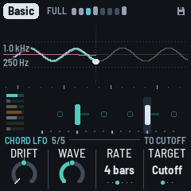
Two layers move by themselves, slowly: the chord's filter (or, by its Target, its resonance or its Colour) and a filter on the whole noise, its hits and its hiss (or, by its Target, its Tone or its Air). Each moves two ways at once, a wave, a sine locked to the bars, and a wander, slow and random; how much of each, the page's Wave; how far the two together, the Form page's Drift (1.4.0, the variety plan: each its own Depth and Drift before), each page's own Drift more or less of it (the same name as Form's, as the layers' Vary: it is Form's Drift for this LFO). Each has an LFO page: ENV a fifth time (Chord, Chord voice, Chord filter, Chord FM, Chord LFO, then back to Chord), and SAVE a third time (Noise, Noise voice, Noise LFO, then back to Noise). The button blinks while you're there. Its knobs: Drift, Wave, Rate, Target (KNOB 4, or ALGORITHM: where it goes); the noise's character is on its other pages.
The picture runs across the screen, the present in the middle (a dot on what's heard, a dotted line down through it):
- At the left, what it did: what you hear (the wave and the wander together) bold in the layer's colour, older fainter; the wave's part alone a thin white line, the wander's part a thin pink one. Turn Wave and the two lines trade places: at 0 only the wander (the bold line is the pink one), at 100 only the wave.
- At the right, where the wave is going, a thin dim line (the wander can't be known ahead: it isn't drawn there).
- The span: 4 bars each way for a wave of 1 or 2 bars, 8 for 4, 16 for 8 or more and for the wander alone, so a cycle or two shows on each side.
- Under it, the bars: a tick each, taller where the wave's cycle starts (on the wander alone, where a phrase starts).
- At one scale, the most it can ever reach, so it grows and shrinks in height with Form's Drift and the page's (flat when still); its reach now dotted above and below.
- At the left edge, its reach in its Target's units, just inside the reach on a dark patch (outside it while the reach is small): the chord's cutoff in Hz (around the cutoff its knobs give, before each stab's own envelope opens it), Reso and Colour, the noise's Tone and Air as their knobs show them, the noise's Filter in Hz (20 kHz at the top: open).
- No title: the knobs under it say the Rate, the Wave and the Target, so the picture has the whole height.
The lane under it is the layer's, as on its page.
- Drift: more or less than Form's Drift for this LFO, centred: 0 (the middle, the notch) as Form's says, +50 twice as far, the far left Still (it doesn't move, whatever Form's Drift says). The chord's filter goes about an octave either way at Drift 50 (the wave and the wander together), 1.7 at 100, 2.2 at most (Form's Drift 100, this one +50); on Reso or Colour as far along their knob (below). The noise's filter: open at the top of its reach, closing towards the bottom, up to three and a half octaves (from 20 kHz down to about 1.4 kHz) at Form's Drift 100 and this one +50 (on Tone or Air: below).
- Wave (1.4.0, the user's): the share between the wave and the wander, 0 to 100: 0 the wander alone, 50 half each, 100 the wave alone; continuous, the reach the same whatever it says. The wave is a sine, its top a quarter of the way into the cycle (the other shapes the test builds had, the triangle and the ramps, went: dub doesn't use them, and the balance matters more).
- Rate: how long the wave, a switch, one position a click: 1 bar (one redonda (whole note)), 2, 4, 8, 16 or 32 bars, locked to the bars. (At Wave 0 it has nothing to time.)
- The wander (Wave's other share). Like a hand riding the filter: every 8 to 32 bars it picks a new place somewhere within its reach (a real move, not a twitch), and glides there, smoothly, easing in and out, over most of the time until the next; then it rests there a little. Its moves don't wait for a barline, it never repeats a path, and the chord's and the noise's wander each on their own. It runs under the wave, so the wave rides on it. This is how the records move (the study behind it: they drift far more than they cycle). How much the whole piece breathes (the filter's long sweeps, the echo's wander) is the Form page's Drift's, not this page's.
- Target (KNOB 4, or ALGORITHM, round, a click a step): what the chord's wave and wander move: Cutoff (the filter, as ever), Reso (the filter's resonance) or Colour (the voice's colour, the Chord FM page's KNOB 4). On Reso and Colour they go as far along that knob as they would along the Cutoff's (an octave a 5.5th of its sweep: about ±18 of its 100 at Drift 50, ±40 at the most), never past the knob's own ends. The filter then stays where its Cutoff is. The big ring names it as ALGORITHM turns (DESTINATION over it), the rule over the knobs says TO CUTOFF, TO RESO, TO COLOUR, and the moving knob (see ENV a third time: Chord filter) follows it to its page. Each piece keeps its own; every recipe's is Cutoff.
- The noise's Target (KNOB 4, or ALGORITHM, on the Noise LFO page): Filter (the low-pass on the whole noise, as ever), Tone (the Noise voice's Tone: its rings and its hiss darker and brighter) or Air (the hiss's level, rising and falling under the hits). On Tone and Air they go a quarter of the knob's sweep at Drift 100 (with this page's Drift +50: half of it either way), never past the knob's own ends; the filter then stays open. The big ring names it (DESTINATION), the rule says TO FILTER, TO TONE or TO AIR, and on the Noise voice page the Tone or Air knob shows it moving, as the chord's do (the Filter has no knob: the LFO page's path shows it). Every recipe's is Filter.
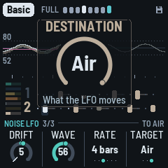
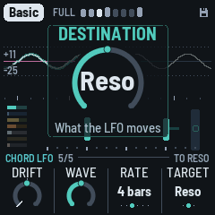
Every piece moves (its Drift 30 to 100). Chamber's and Haze's chords, the slow, ambient ones, wander alone (Wave 0); Fog's and Haze's noise too. The others mix a wave in, as much as their old Depth and Drift gave it: Concrete's chord most (76), Night Drive's 63, Steppers' 59, Pressure's 56, Basic's 51, Fog's 48; Basic, Pressure and Concrete's chords on 4 bars, Steppers' on 2, Night Drive's on 8 (each piece's in Parameters). The defaults: Wave 50, 4 bars, Drift 0.
The bass and the pings have no LFO (DUB-1 1.4.0: the records never move a dub bass that way, and the pings' was barely heard). The bass moves with the arrangement and the hand: Energy, Motion, a nudge.
The voice pages
Press a layer's button again (ENV on the Chord page, ARP on Pings, LFO on Bass, SEQ on Drums, SAVE on Noise) for its voice page: four more knobs that shape its sound. The button blinks while you're there; press it again for the next page, or go anywhere else as usual. ALGORITHM still changes the voice.
Most knobs are relative to the voice as it is: 0, the middle, is the preset; turning moves away from it, to −50 or +50 (with the notch at 0). Two are one-sided, 0 to 100 from the voice's own, since the voice can't go the other way: the chord's Attack (0 the voice's strike, slower from there) and the pings' Bend (0 the voice's own fall, more from there). The chord's Cutoff (on the Chord filter page) is around the piece's own, −50 to +50 (0 the piece's); its Env and Env decay are the piece's own, −50 to +50 (0 the voice's); its Decay is its own, 0–100. The registers (the pings' and the bass's Octave) come first. Your turns stay when you change the voice, so a chord made slower and brighter stays slower and brighter on the next voice. Holding GLO 1.5 s (the piece back to its recipe) puts them back to 0. Each piece keeps its own.
The middle of the screen shows the layer live, as its page does: its own ripples (or, with ALGORITHM's view, the scope or the spectrum of its sound), with the chord's name, and its lane under it.
| Voice page | KNOB 1 | KNOB 2 | KNOB 3 | KNOB 4 |
|---|---|---|---|---|
| Chord voice | Attack: 0 the voice's strike, up to a slow swell | Decay: how long a stab rings, 0–100, from 60 ms to 1.5 s (times the voice's own length) | Colour: the voice's own colour (also on Chord FM) | — |
| Chord filter (ENV a third time) | Cutoff: the low-pass, darker or brighter than the piece's own (see ENV a third time: Chord filter) | Reso: the filter's resonance | Env: how far each stab opens the filter | Env decay: how quickly it closes again |
| Pings voice | Octave: two octaves down to two up | Tone: round to metallic (moves the piece's Ping tone) | Length | Bend: the pitch falling at the strike, 0 the voice's own, up to from four times its note |
| Bass voice | Octave: −1, 0, +1 | Shape: up, towards a square; down, towards a pure sine | Gate: how long each note holds, against its groove's (Drone's to the whole bar at +50) | Glide: how long it slides to the next note, ~1 ms to ~250 ms |
| Kick | Tune: semitones from the key's note, −12 to +12 | Length: how long it booms | Punch: the kick's start pitch and its click | Rumble: a dark roar under the kick, none at 0 |
| Hats (SEQ a third time) | Level: against the kick | Tone: dark to bright | Length: how long they ring | — |
| Noise voice | Air: the hiss under it | Tone: the rings darker or brighter | Decay: how long each hit rings | Width: the rings mono to wide |
The chord's Decay is the voice's length times its own: an Organ or a Pad rings longer than Saws at the same Decay. Each stab opens the filter and closes it again, bright at the strike and darker within about 50 ms, as the classic dub techno stab does; how far it opens (Env) and how quickly it closes (Env decay) come with the voice and the piece, and are on the Chord filter page. Decay still makes the whole stab, its filter too, longer or shorter. The bass's Bite and the pings' Ratio are on their FM pages (see The FM pages).
HOME: Form
How the piece unfolds (the Dub page until 1.4.0). ALGORITHM (here and on any page but a layer's, the Noise pages, the LFO pages or the Chords pages): the middle of the screen as ripples, scope, spectrum or tape (see The screen). HOME again: the Song page (below), then the Key page.
- Energy: busier or sparser, now: 0 in the middle, the notch there. Down, sparser and drier: fewer and quieter pings, fewer and quieter hats, fewer and shorter stabs, a thinner bass line, a sparser kick. Up, busier and brighter: more of each, louder hats, longer stabs, a thin bass filled back in, the kick nearer four on the floor. It leans the arrangement, never locks it (1.4.0, after the variety study: past halfway it used to fix the phrases Thin or Full, and Motion stopped working): past halfway down a Groove Motion picks comes as a Thin; past halfway up a Break comes as a Groove, the kick staying. Motion's sections go on at any Energy. For playing: not saved, and it stays where it is when you change piece. (The Arrangement page's KNOB 1 too until 1.4.0's space pages, now there the Width; the DJ filter, KNOB 1 here until 1.4.0's Chord pages, is on SELECT, on every page.)
- Vary (1.4.0, Evolve's place): how much the loop changes, from held to restless: the stab pattern turning and gaining or losing stabs, stabs and whole bars dropping out, the shaker's pattern, the pings' notes, loops sitting out, octave jumps in the bass, how far the kick's shape wanders (see The layers). Each layer's own Vary (its part page) trims it for that layer, or holds it. A continuous knob, every step heard, no thresholds. Its scale follows the records (1.4.0, format 35): 50 is the classic records' middle (Basic's 50 plays as Basic Channel's BCD loop measures); 0 to 50 the held loops up to it, in even steps; 50 to 100 on to the most restless and past, each step a little more than the last (about 5%), so the knob's top half is where the change grows fast. The pieces sit where their records do: the held ones under 50 (Chamber 31, Haze 40), the restless ones at 76 to 86. At 0, with Motion at 0 and the Drums page's Kick on Four too, it's a strict loop: every stab every bar, the kick four on the floor, no fills, the phrase plan as it was drawn when the music started (good for playing along with other gear), and no throws. To keep the groove now, at any Vary, hold SEL: Lock. Vary also moves the bass's groove, rarely, to a neighbour (Offbeat to Dotted, say), and back towards the piece's own later, as the square of the bass's amount: at 100, every few minutes; at 86, a quarter as often; at 50, hardly ever (the classics' bass keeps its groove); at 0 (or the bass on Hold), never. It no longer nudges the sound by itself (Evolve did, above 40): the sound moves with Drift.
- Motion: the arrangement, in three zones, each adding a new kind of event (the ring in segments; turning it, the big ring names the zone and says what it adds): Breathes (0–39), parts ridden out and back by the dub mixer and the kick out a bar or two, off the phrase lines (at 0 nothing ever leaves); Sections (40–69), Thin and Groove phrases join, rarely at first, then often; Breaks (70–100), Breaks join, the kick and the bass out for a phrase (see The arrangement). Every step changes how often. Only the arrangement (1.4.0, after the variety study): how far the sound moves is Drift's, so a still arrangement can still breathe, and a busy one can be dry. (The Mixer knob's moves are here since 1.4.0's last builds: an older project's Motion and Mixer become Motion, as near as they sounded.)
- Drift (1.4.0, the variety plan): how much the sound moves, from still to restless, one amount for all of it: the chord's and the noise's LFOs (their wave and their random wander; see The LFO pages: each LFO page's Drift more or less of it), how far the filter's long sweeps go (about 1.6 octaves either way at 50, a little more above, a new place every 6 to 20 bars, off the phrase's line, glided to over 3 to 7.5; Basic's every 4 to 14; a piece you changed in an older project keeps the old pace, 4 to 14), how much the stabs' filter, the echo's heads, its band-pass and its feedback wander (Motion's until now), and the dub mixer's slow rides of the parts' levels and sends (the Arrangement page's Mixer until now). A continuous knob, every step heard. At 0 the piece's sound holds still (a Break still goes dark, a Thin a little); at 50 the classic records' middle (about an octave of the chord's filter, the levels a few dB); at 100 the most restless of them. Turning it leaves the music's choices as they were: the notes, the patterns and the arrangement go on the same. (The Drift that was here until 1.4.0's Chord pages, how long a chord lasts, is the Chord page's Change.)
HOME again: Song
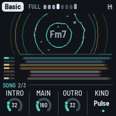
The piece's song (1.4.0): how long its intro, its main and its outro are, and which parts come first (see Songs). It plays when the Song mode (GLO again) is Song or Set; in Endless the page shows the song it would be, dimmed. HOME again goes to the Key page.
- Intro: 0 to 128 bars, a phrase (8 bars) a click; None: the song starts full.
- Main: 32 to 512 bars, a phrase a click: the piece as Endless plays it.
- Outro: 0 to 128 bars; None: it stops at the main's end.
- Kind: Ambient (the noise and the chord's wash first) or Pulse (the kick and the bass first).
In the middle, the song's shape: a band over the rows, the intro and the outro in teal at its ends, the main between; under it a row a part (the lanes' rows, in their colours), each from where it comes in to where it leaves, dimmer as it fades in and out; while a song plays, a white line where it is.
HOME a third time: Key

The piece's key and time, which a dub track seldom changes. HOME blinks while you're here; HOME again goes back to the Form page.
- Tempo: 40 to 140 (from 1.4.0; it was 90 to 140). Also HOME + SELECT, from any page. Under about 43 BPM the echo's longest time (a bar) no longer fits its tape (5.6 s): it stays at 5.6 s, and the Dub page shows its time as it is ("5.6 s" in place of "1 bar"); the other times fit at any tempo.
- Root: the key's root note. The scale moves with it, and the chord at once.
- Mode: Minor (Aeolian), Major (Ionian), Dorian, Mixolydian, pentatonic minor and major, Phrygian, Lydian (the most common first; the screen shows Aeolian as Minor and Ionian as Major), and five Japanese scales, five notes each (1.4.0): Hirajoshi (1 2 ♭3 5 ♭6, shown "Hirajosh"), In or Miyako-bushi (1 ♭2 4 5 ♭6), Iwato (1 ♭2 4 ♭5 ♭7), Yo (1 2 4 5 6) and Insen (1 ♭2 4 5 ♭7). Their chords are built as the pentatonics' are (stacked in fourths, three tones a chord); where a scale has a half-step, the stabs never sound its two notes side by side: the upper one goes up an octave, a minor ninth (the koto's colour, not a cluster). It loads the mode's scale. Editing the scale with the keys makes it Custom.
- Swing: the off sixteenths late, from straight (50%) to a heavy lilt (70%): everything on them, the stabs, the bass, the pings and the drums, together.
ENV: Chord

The chord has five pages, ENV pressed in turn: Chord, its part (what it plays and how that changes); Chord voice, its strike and length; Chord filter, its filter and the sweep each stab makes; Chord FM, the FM voice and its Colour (for every voice; see The FM pages); Chord LFO, its slow movement (see The LFO pages); then back to Chord.
- Density: how many stabs a bar, one to six, a click each (1.4.0: a count; it was 0–100, the steps between two counts alike), on a Euclidean pattern off the beat. Vary may add or take one now and then, leave one out, or rest a whole bar.
- Throws: how often a stab is thrown into the echo: at 0, never (but the last stab of a fill); at 50, about one stab in eight; at 100, about one in three. More in a Break; fewer in the tighter pieces (their looseness). A thrown stab's dry is 6 dB down. The chord's throw (the Arrangement page's F♯3 held) and the grid's Throw throw every stab, whatever it is.
- Change: how long a chord lasts before it moves on: 2, 4, 8, 16, 32 or 64 bars, or Hold (it moves only when you press EDIT); a switch, its seven positions as dots. The chord moves at the start of a bar. (The Form page's Drift until 1.4.0's Chord pages: the same value, kept.)
- Vary: the chord's trim on the Form page's Vary: how often the stabs' pattern turns (a step round, or a stab gained or lost, within one of Density's), more or less than Form's Vary has it (0: as Form's). At Hold (the far left) never, at any Vary: the pattern still, every stab of it played (no stab left out, no bar without one; the arrangement's Groove and Break still thin it). At Vary 82, about every seventh bar at 0, more than twice as often at +50.
The chord's Wet (the stabs dry against their echo) left this page in 1.4.0's Chord pages. Its sends are now the chord's channel strip on the Arrangement page (white 1 held: Level, Echo, Plate, Filter); the dry against them stays each piece's own, on no knob, and the Arrangement page's Wet moves it on top. The stab's sound, the voice, comes with the piece (ALGORITHM changes it).
ENV again: Chord voice
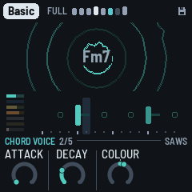
The chord's strike and length (the Chord sound page until 1.4.0's Chord pages; its filter has its own page since format 36, the next, ENV again). ALGORITHM still changes the voice. KNOB 4 is empty.
- Attack: 0 the voice's strike, up to a slow swell.
- Decay: how long a stab rings, 0–100, from 60 ms to 1.5 s (times the voice's own length). The filter's envelope follows it, at the pace the piece gives it (Env decay, on the Chord filter page).
- Colour: the voice's own colour, the same knob as on the Chord FM page (on every voice, FM or not).
ENV a third time: Chord filter
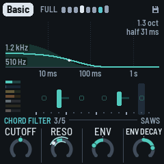
The chord's filter, a low-pass, and the sweep each stab makes on it (Cutoff and Reso were the Chord voice page's; Env and Env decay were on no page, each piece's own). ALGORITHM still changes the voice.
- Cutoff: where the low-pass sits, around the piece's own: 0, the middle (the notch there), is the piece's brightness; −50 darker, +50 brighter, each step about an 18th of an octave (±2.75 octaves at the ends), as the main filter turns around its middle. (The piece's own, its recipe's, is 110 Hz to about 5 kHz; the filter goes from 90 Hz to 12 kHz.) Each stab opens it further for a moment (Env), the arrangement's sweep moves it (with Drift), and with the piece's looseness each stab sits a little higher or lower (up to about half an octave). (A 0–100 knob until 1.4.0's layers' pages: what you had set is kept, as its offset from the piece's own.)
- Reso: the filter's resonance, −50 to +50 around the voice's own.
- Env: how far each stab opens the filter, −50 to +50 around the voice's own (0: Saws about 2.5 octaves, an Organ 0.7): at −50 not at all, at +50 twice as far. Each piece has its own (Basic −25, Pressure +50).
- Env decay: how quickly it closes again, −50 to +50 around the tie to Decay (0: a quarter of the stab's length and 20 ms), each 12 or 13 steps about twice as slow (±50: 16 times quicker or slower). Each piece has its own (Basic and Steppers +31: the sweep heard, a "wow" rather than a click).
The picture. The middle of the screen draws the stab's filter as it plays: the cutoff over time, in the chord's teal, up the screen in octaves over the Cutoff (4 octaves the whole height; more, along the top), on a time line in decades, 10 ms, 100 ms and 1 s marked under it; the stab's level faint behind it. Env moves where the curve starts, Env decay moves its fall left (quicker) or right (slower), and Decay moves both the fall and the ring behind it. At the left, the cutoff at the strike and at rest, in Hz; at the right, how far it opens (Basic: 1.3 oct) and its half-time (half 31 ms), a white dot on the curve where it is half closed. At Env −50, NO SWEEP.
The moving knob. The Chord LFO (its wave and its drift) moves the knob its Destination names: the Cutoff (every recipe's) or Reso, here, or Colour, on the Chord FM page. That knob shows it: two pale lines, just outside and just inside its ring, span how far they reach either way, and a white dot on the ring is where it is now, moving as you hear it. The knob's own place, the middle they swing around, is where its teal ends (its own dot left out while the LFO moves it).
ARP: Pings

The pings' part. ARP again: the Pings voice (below); again, the Pings FM page (see The FM pages); again, back.
- Density: how many notes each loop holds, none at 0 to five at the top, a little fewer while the sweep is dark. A change shows up as each loop comes round.
- Vary: the pings' trim on Form's Vary: how often the loops change (a note moved, or one sat out for a pass), 0 as Form's, Hold never (see The pages).
- KNOB 3 is empty: the pings' Wet (their dry against the echo) left the page in 1.4.0's layers' pages. Their sends are their channel strip on the Arrangement page (white 2 held); the dry against them stays each piece's own, and the Arrangement page's Wet moves it on top.
- KNOB 4 is empty: the Cloud, the plate's grains, is on the Echo page with the space (FX twice) since 1.4.0's space pages.
ARP again: Pings voice
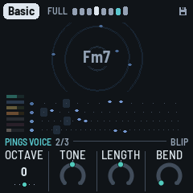
- Octave: the pings two octaves down to two up (KNOB 1, as on the Bass voice page). While playing, a ping sounds at once in the new octave.
- Tone: round to metallic (it moves the piece's Ping tone), −50 to +50.
- Length: how long each ping rings, −50 to +50 around the voice's.
- Bend: the pitch falling at the strike, 0 the voice's own, up to from four times its note.
SAVE: Noise

SAVE, a tap: the Noise page, its part (Density, Vary); again, the Noise voice (Air, Tone, Decay, Width); again, the Noise LFO; and again back. Its sends, the plate and the echo, are its channel strip on the Arrangement page (white 6 held). The noise isn't a bed of hiss but a voice of its own, played like the drums:
- The crackle groove: hits on a two-bar pattern of sixteenths, spread evenly (a Euclidean pattern), turned and with a hit or two nudged a step off, now and then one a quiet ghost. When a phrase starts the pattern is drawn again, or now and then kept, so a motif comes back (kept more often as Vary falls). Break and Thin phrases have fewer hits.
- Rung on the chord: each hit is a short burst of noise that strikes three resonators tuned to the chord's root, third and fifth, low (E1 to Eb2), the root in the middle, the third left, the fifth right. They're retuned at each hit, so the crackle follows the chord. Then a band-pass (Tone) takes the top off: almost nothing above 2 kHz. It goes into the plate, a little into the echo, more while a stab is thrown. In a Break or Thin phrase it rings longer, to carry the music.
- The Air: a quiet hiss under it, and now and then a dry vinyl click.
- Under the duck: the noise dips on every beat, deeper than the music, and swells between.
The Noise page, its part:
- Density: how many hits ring in the two bars, from none at 0 to 16 at 100 (8 at 50), every step heard (between two counts the last hit comes in faded); the dry clicks come with it, and at 0 they're gone too (the hiss stays: Air). A turn is heard from the next bar.
- Vary: the noise's trim on Form's Vary: how often its groove is drawn anew at a phrase's start, rather than kept (each piece's own pace under it): 0 as Form's, Hold never (the groove kept) (see The pages).
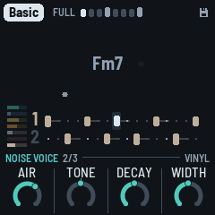
SAVE again, the Noise voice: Air runs from nothing at 0; Tone is around the piece's own noise, 0 in the middle; Decay 50 is the middle:
- Air: the hiss under it, from none at 0 to the loudest at 100.
- Tone: the band-pass, the rings darker (about 250 Hz) or brighter (up to about 2 kHz). The arrangement's sweep moves it too.
- Decay: how long each hit rings on the chord, from a knock (about 70 ms) to a hum (over a second).
- Width: the rings mono (0) to wide (100): the third further left, the fifth further right; 50 as the pieces have it. (From the Noise space page, gone in 1.4.0's channel strips.)
- The level is on OCT− / OCT+, as the layers' are, 5 a press; both together mute the noise, its level kept.
- ALGORITHM: (here and on the Noise page; on the Noise LFO page it is the LFO's Destination) the noise's character, the same machine set otherwise: Vinyl (the default: the crackle groove rung on the chord), Tape (the hiss through the resonators too, a pad that swells between the beats; fewer hits, longer, darker), Dust (dry clicks and bursts, no ringing; more of them, brighter), Room (on the key's tonic triad instead of the chord, long, more air), Machine (inharmonic, metallic). Its name shows at the left of the knob strip, and a message says it ("NOISE Tape").
The middle of the screen shows the noise alone, as the screen's view has it (ALGORITHM on another page): on the ripples its specks, on the scope or the spectrum its sound, so you can see its colour as it moves. Each piece has its own: Basic and Steppers on Vinyl, Fog and Night Drive on Tape, Chamber on Room, Concrete on Vinyl too, Haze on Dust, Pressure a quieter, darker Vinyl.
Where the noise sits. Its Width is on the Noise voice (above). How much of it rings in the plate and how much goes into the echo are its channel strip's (the Arrangement page, white 6 held: Plate and Echo, 50 as the pieces have it, none at 0, twice at 100; a thrown stab still sends more), with its Level and a Filter: its high-pass on its rings and its clicks (the hiss is above it), its low-pass on all of it, the hiss too, in the noise's own filters (as its LFO's Filter), at no cost. The Noise space page that held them (SAVE a third time, until 1.4.0's channel strips) is gone.
How fast its levels, tone and decay drift is each piece's own (its recipe), and so is the pace its groove changes at, under the Noise page's Vary; the groove is drawn anew at a phrase's start now and then, more often as Vary rises, and Lock keeps it. Its drifts move on the barlines.
The Arrangement page's Wet moves the noise too: its dry down and its plate and echo up, or the other way.
LFO: Bass

The bass's part (its structure all here: the groove first). LFO again: the Bass voice (Octave, Shape, Gate, Glide: see The voice pages); again, the Bass FM page, its Bite there (see The FM pages); again, back.
- Groove: the pattern, from sparse to busy: Drone (one note a bar, held almost to the next), Offbeat (the four off-beat eighths), Dotted (two notes a dotted eighth apart, twice a bar), Sync (three notes, syncopated) and Roller (six notes a bar, rolling). Density thins any of them.
- Vary: the bass's trim on Form's Vary: how often the phrase plan is drawn anew (which notes play, its octave note: below), and the borrowed groove (Form's Vary, above): 0 as Form's, Hold never (the plan kept as it was first drawn) (see The pages).
- Density: how many of the groove's notes play, in two zones. At 0 the bar's first note alone, at 100 every one; between, the groove's notes join one by one, each step fading the next one in (1 + (n − 1) × Density of a groove's n notes: Offbeat at 50, two and a half). Sparse (0–29): the B bars all sparse. Pickups (30–100): a busy B bar plays the whole groove and a pickup into the next bar. The bar's first note is always kept; Drone, one note, changes only at 30, its pickup. Which ones play is drawn once a phrase (the phrase plan): the same every A bar, every other one in a sparse B bar. Energy (the Form page) thins it further, or fills it back towards every note.
- Fifth: how often a note is the chord's fifth instead of its root. A note on the bar's first sixteenth is the root, except with Drone: there Fifth sets how often a whole bar is the fifth.
On the Bass voice page, Octave is −1, 0 or +1. At 0 the bass sits between E1 and Eb2 (41 to 78 Hz); at +1 an octave higher; at −1 an octave lower, E0 to Eb1 (21 to 39 Hz): felt more than heard, and lost on small speakers.
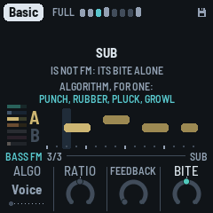
SEQ: Drums

The drums' part. SEQ again: the Kick page (its sound); again, the Hats page; again, the Pattern page (below); again, back.
- Kick: the kick's shape, a switch, from the fullest to the sparest: Four (four on the floor), Ghost (four, with two and four ghosted, about 10 dB softer), Half (one and three), One (the downbeat alone). One click is one position. It takes effect from the next bar, even at a piece's opening, and holds for a few phrases; with Vary up it wanders now and then to a neighbouring shape (on Four, a Thin phrase ghosted or half). Vary lets it wander further, a Thin phrase takes it a step sparser, and Energy (the Form page) moves it. The kick is out in a Break and the second half of a fill; with the Pattern page on Pattern, your kick lane plays instead.
- Hits: how busy the hats are, in four zones (its ring in segments, the zone's name on the big ring as it turns). Shaker (0–14): the shaker alone, from none to all twelve sixteenths that aren't the open hat's, the ones before the beats first, a step more as it turns (between two counts the next step comes in faded); at 0 no hats at all, the kick only. Open hat (15–39): the open hat joins, on the off-beat of beats 1 and 3. Offbeats (40–69): the open hat on all four off-beats. Rim (70–100): the rim joins, on two and four, the dub snare. The shaker keeps growing through them all. Which of them rest (with the piece's looseness) and their feel are drawn once a phrase: the phrase plan (see The arrangement).
- Vary: the drums' trim on Form's Vary: how long the kick holds its shape and how far it wanders, the shaker's steps trading places, the clap now and then. 0 as Form's; Hold the kick kept (a section still brings its own) and the shaker's pattern kept (see The pages).
Duck, how far each beat pushes the rest down, is the Arrangement page's KNOB 4 now (see Controls). Swing is on the Key page (HOME, then HOME again).
SEQ again: Kick
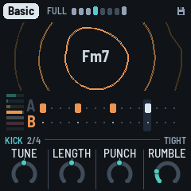
- Tune: semitones from the key's note, −12 to +12.
- Length: how long the kick booms, −50 to +50 around the kit's.
- Punch: the kick's start pitch and its click, −50 to +50.
- Rumble: dub techno's rumble: a dark, unpitched bed under the kick (around 30–80 Hz, mono), the kick's tail held over the beat, ducked by each kick and swelling before the next; none at 0, deeper and longer as it rises (Steppers' 14, Basic's 21, Fog's 62). Most pieces sit between 15 and 60; 100 is heavy, for when you want it.
SEQ a third time: Hats
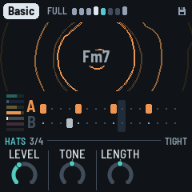
- Level: the shaker and the open hat against the kick: at 50, as the pieces have them; about 12 dB down at 0 and 12 dB up at 100. The same as the Hats strip's Level (white 5 held on the Arrangement page); the kick's is the Kick strip's (white 4). The drums' level (OCT− / OCT+ on the Drums pages) moves the kick, the hats, the rim and the clap together.
- Tone: how dark or bright the hats are, around the piece's own colour (−50 to +50).
- Length: how long the shaker and the open hat ring, from about half the kit's to twice.
The Pattern page (SEQ a fourth time, after the Hats page): the drums' five lanes, sixteen steps each, to write yourself.
| KNOB 1 · Lane | Kick, Shaker, Open (hat), Rim, Clap |
| White keys 1–16 | the lane's sixteen steps: a key turns its step on or off (lit when on) |
| A black key held + a white key | that step accented (on, and drawn taller) |
| KNOB 2 · Accent | how much quieter the unaccented steps are, 0 to 100 |
| KNOB 3 · Chance | how likely the lane's steps are to play, 0 to 100%: loose, breathing hats (the clap starts at 5%: rare, as it shines) |
| KNOB 4 · Play | Auto (the patterns generated from Density and Hits) or Pattern (yours) |
The first step you change takes the pattern over from what Auto was playing, and switches Play to Pattern. The arrangement still takes lanes out over yours (a Break, the second half of a fill, the Arrangement page's mutes), and Swing still delays the off sixteenths. Your patterns play as written, each step by its lane's Chance: the kick's shapes, the phrase plan's B bars and the hats' feel are Auto's (the bass still plays its plan). The patterns are kept with the piece.
FX: Dub

The echo and the plate, dub's own instrument (the Space page until 1.4.0).
- Echo: how much goes to the echo.
- Echo time: the tape loop's length: an eighth, a dotted eighth, a quarter, a dotted quarter, a half or one bar. The second head, heard while a throw rings, repeats at three quarters of it, or with Drift up, wherever it has slid to.
- Feedback: how long the repeats go on, shown as the time they take to die away (to −60 dB): 1.5 s to 15 s. The loop's gain follows the echo time, so a long echo fades as soon as a short one. Throws, the Arrangement page's Echo key and the grid's Swell still push it further; past 100% the soft clip holds it, and the echo swells and smears on itself. While resting it's kept under 90%, so the tails always die out.
- Reverb: how much goes to the plate.
FX again: Echo

FX on the Dub page opens the Echo page (FX blinks while you're here); FX again goes back. The space's colour, the echo's and the plate's, together. The four are 0 to 100; 50 is the echo as the pieces have it.
- Blur: how much each repeat dissolves: at 0, clean copies; at 50, each a little softer and more smeared than the last; at 100, a wash.
- Tone: what goes into the echo, darker or brighter: a low-pass at about 2 kHz at 50, an octave down for every 25 under it (about 500 Hz at 0), and up to about 5 kHz at 100 (an octave and a third over the top half, every step heard).
- Size: how long the plate rings.
- Cloud: how much of the reverb goes through the granular cloud: at 0 the plate alone, at the top a thick wash of grains. (On the Pings page until 1.4.0's space pages.)
The echo's Width, the whole mix's stereo field, is the Arrangement page's KNOB 1 since 1.4.0's space pages (SEL).
GLO: Setup

What holds for every piece and the whole machine (the root is the piece's: on the Key page). GLO again: the Song mode page (below).
- Tune: fine tuning, ±50 cents.
- MIDI out: on or off.
- Lights: On: the keys light the scale, and the unlit buttons glow dimly so they can be read on the black FM-1. Keys: the key lights only. Off.
- Save: a turn saves all eight pieces. It shows Save, its dot lit, while there are unsaved changes, and Saved after. (GLO held does the same.)
On this page the header's right shows the machine. CPU 35/61 is how much of the FM-1's time the sound takes: 35% now (smoothed), and 61% at the heaviest moment of the last two seconds. Under 100% the sound never breaks up; if it ever did, a ! and a count of the dropouts would follow. When a moment runs heavy (past 75%), DUB-1 sheds for half a second what is least heard: the quietest tails of the stabs and the pings, the cloud's new grains, the noise's new hits and the width, eased back as the load falls, so a crowded moment doesn't break up. Then, next to the battery icon, a rough charge in % (67%), or USB when a computer powers (and charges) the FM-1.
Over the middle of the screen, on a dark panel, the machine in figures (1.4.0, for reporting a problem):
- CLOCK: the CPU's clock, in MHz when the chip can measure it; else read from its registers, 360 MHz (stock) if they are M-VAVE's, OTHER if not. Under it, the three registers in hex.
- BUILD: which build is running.
- PEAK and MEAN: the sound's time a block, in milliseconds (a block is about 5.8 ms): the heaviest block of the last two seconds and the window's mean, each its total and then its four biggest stages (STB the stabs, BAS the bass, PNG the pings, DRM the drums, NOI the noise, RMB the rumble, WID the widening, FX the effects, MIX the echo, the cloud, the plate and the master; DRN, CTL, FAD and EVT the engine's own work: its commands, its slow controls, the faders and LFOs, the steps' events).
GLO again: Song mode
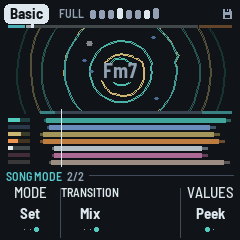
How DUB-1 plays a piece (1.4.0; see Songs): the player's, the same for every piece, and saved. GLO again goes back to Setup.
- Mode (KNOB 1): Endless (as ever: it starts full and plays on), Song (PLAY: an intro, the main, an outro, then silence, PLAY off), Set (the same, then the next piece from its intro, to the last). Turned to Song or Set while playing, the song starts at once from its main (the section word as ever, the song's line along the header, the outro after Main's bars); PLAY again starts it from its intro. Turned to Endless, at once (the song let go, playing on).
- Transition (KNOB 2): how a set goes from one piece to the next: LP (each song ends, a pause, then the next), Segue (the next song from the bar after the outro, as from its intro's second phrase, the echo held under it) or Mix (the tempo glides to the next piece's over the last phrase; its pulse on the downbeat under the old echo). See Songs. Only in Set mode: in Endless and Song it's grey, and a turn only says so (its setting kept). LP in projects saved before it (before format 33).
- KNOB 3: none.
- Values (KNOB 4, 1.4.0): Peek (a knob's number shown a moment as its page opens, then only its ring; the number in the big ring while it turns) or Always (the numbers inside the rings). The same for every piece, saved.
9 MIDI
MIDI comes in over USB and the TRS jack, and goes out over USB.
- In, channel 1: a note adds or removes its note from the scale, like a key.
- In, channel 1, CC: a controller's knobs and faders turn DUB-1's (the table below), the whole 0–127 over the knob's range: a centred knob (the Filter, Reso, Cutoff, Wet, Energy) is at its middle at 64. The knob shows large, as when you turn it. The FM-1's USB is a device, like the controller's, so a USB controller reaches it through a computer (or a USB MIDI host box), or by the TRS jack.
| CC | Knob |
|---|---|
| 1 | Filter (SELECT's DJ filter) |
| 20–23 | The layers' levels: Chord, Pings, Bass, Drums |
| 24 | Kick level (its channel strip) |
| 25 | Hats Level (the Hats page) |
| 26 | Noise level (its channel strip) |
| 27, 28 | Wet (the Arrangement page), Energy (the Form page) |
| 29 | Duck (the Arrangement page) |
| 71–74 | The chord: Reso, Decay, Attack, Cutoff (Reso and Cutoff on the Chord filter page, Decay and Attack on the Chord voice page) |
| 91–94 | The Dub page: Reverb, Echo, Feedback, Echo time |
| 95 | Cloud (the Echo page) |
| 102 | Density (the Pings page) |
| 103 | Vary (the Form page) |
| 104 | Hits (the Drums page) |
| 105 | Swing (the Key page) |
| 106 | Size (the Echo page) |
Wet, Energy and the Filter are for playing, as on the panel: they are not saved. The others are the piece's, saved with SAVE.
Screen reader
DUB-1 can tell a screen reader what its screen shows. Connect the FM-1 by USB, open the FM-1 Screen Reader in Chrome or Edge, and click Connect. It reads out the page you're on and its knobs, a knob's value as you turn it, the piece and its key, the notes you add or take out, every message, and the chord each time it moves. Press W to hear the whole screen again: the page, the piece, the chord, the section and its bar, and the scale. The FM-1 says nothing until the page connects, so a DAW on the same cable never sees it.
DUB-1's word list (how the reader says what's written on the screen) is published with DUB-1's site, and the FM-1 tells the reader where to find it.
10 Saving
DUB-1 keeps all eight pieces in the FM-1's memory, each as you left it: the knobs, the scale, the mode, the root, the tempo and the pings' octave, each piece's song, plus Tune, MIDI out, Lights, the Song mode, a set's Transition, Values and the dub sirens' knobs.
- By itself: a few seconds after a change, but only while resting and once the stabs have died away. Writing to the memory interrupts the sound for a moment, so it never happens while the music plays. A small disk at the top right of the screen means there are unsaved changes.
- GLO held for half a second, then let go: saves now, playing or not ("SAVED").
- Setup's KNOB 4 (Save): shows Save, its dot lit, while there are unsaved changes, and Saved once there aren't; a turn saves.
- Hold GLO on for 1.5 s: the piece goes back to its recipe ("RESET"). That isn't saved until the next save, so switching off before then brings your version back.
Lock, the Filter, Energy (the Form page's) and the Arrangement page's Wet aren't saved; its Width and its Duck are the piece's, and are.
Projects saved by an older DUB-1, since 1.0.0 (formats 8 to 34; 1.4.0 saves format 35), are read and converted. A piece you never changed takes its new recipe, so it sounds as this version tunes it: DUB-1 recognises it by comparing it with that piece's recipes as they have been since 1.0.0, and with its scale. A piece you changed keeps what you set, and the values that are new (the chord's Wet, the kick's Density, the echo's Blur, Tone and Width, the noise's Decay, Width, Plate and Echo, the hats' length) come from its recipe. A value saved past a knob's range as it is now (the chord's Attack, the pings' Bend and the FM pages' Feedback are 0–100 from the voice's own now; the FM pages' Mod dec is now the LFO) is brought to that range's nearest end, the rest kept. From 1.4.0, the LFOs' Rates, Waves and Drifts come from the recipe (a 1.4.0 test build's Rate on Drift becomes the Drift knob, the wave off); the pings' and the bass's LFO values are kept but do nothing. From 1.4.0's Chord pages (format 21), the chord's Vary trim is 0 (it followed Evolve alone then) and its LFO's Destination comes from the recipe (Cutoff: as it played before), and the Form page's Drift is the Chord page's Change, the same value kept. From 1.4.0's layers' pages (format 22), the pings', the bass's, the drums' and the noise's Vary trims are 0 (as Evolve alone turned them then), and a chord Cutoff you had set (then a 0–100 knob) is kept as the new knob's offset from the piece's own (as far as the knob goes, ±50). From 1.4.0's layers' pages (format 22), the channel strips' sends and Low cuts come from the recipe (the sends 50, as they sent before; the bass's Echo 0; the Low cuts off), and the noise's Width, Plate and Echo (the Noise space page's) are kept, now on the Noise voice and the noise's strip. From 1.4.0's channel strips (format 23, the drums one strip), the drums' strip is the Hats strip, its sends and Low cut kept, and the Kick strip comes in at its level ×1 with no sends, its Low cut the drums' (as it sounded: that one cut the kick too). From 1.4.0's six strips (format 24), the noise LFO's Destination comes from the recipe (Filter, as it played before); the Cloud and the Width are kept, on their new pages. From 1.4.0's noise LFO Destination (format 25), each piece's song comes from its recipe (Intro 32, Main 160, Outro 32 bars, its Kind), and the Song mode is Endless, as it played before. From 1.4.0's song structure (format 26), each piece's Mixer comes from its recipe. From 1.4.0's dub mixer (format 27), each strip's Low cut (0–100, a high-pass) becomes its Filter's high-pass at the same cutoff, as near as a step goes (a Low cut of 100, about 600 Hz, is +36); the tempo and the scales keep their values (the new range only reaches further). From the variety plan's step 1 (format 29) and before, each piece's LFOs' Depth and Drift and its Mixer become the Form page's Drift and the LFO pages' Drifts, and each LFO's Wave the share its Depth and Drift gave the wave (0 where its wave was off), as near as they sounded, and the throws are set at the chord's Vary as it was.
From the variety plan's step 2 (format 30), Motion becomes the arrangement alone and takes the Mixer's moves, as near as they played: an old Motion up to 40 (Full only then) becomes 0.4 times its Mixer, at most 39 (the moves as often as the Mixer made them; a Mixer of 0, Motion 0); 41 to 70 becomes 47 to 69 (the Sections as often); 71 to 100 becomes 76 to 98 (the Breaks as often). The Mixer is kept, but nothing reads it. From step 3 (format 31), the knobs whose steps did nothing are rescaled as near as they sounded: the chord's Density becomes its count of stabs (1 to 6); Hits, the bass's Density and the noise's Density keep the hits and notes they gave (the open hats and the rim too), the last now faded in; Drone's Gate keeps its length; the hats' and the pings' Tone, the noise's Tone and Decay, the echo's Tone above 50 and the chord's Attack keep their sound on their new ranges. From step 4 (format 32), a set's Transition is LP, as a set played before. From the Transition (format 33), the four sirens' knobs start as the sirens sounded before them (Wail's Rate 4 bars, Whoop's 2.5 a second, and so on: the values in brackets in the sirens' table). From the sirens' knobs (format 34), Vary moves to its new scale (50 the classics' middle: see HOME: Form): a piece's Vary becomes the knob that gives the amount it had (the old knob was the amount; its 8 is the new 50, its 40 the new 82), each trim the one that gives its layer the amount it had (a layer that was still stays still, by Hold where a trim can't reach; a trim reaches ±50 steps, so a layer far from Form's Vary comes as near as that goes), Hold stays Hold; and a piece you changed keeps the filter's sweep at its old pace (every 4 to 14 bars), on no knob. A piece you never changed takes its new recipe with the new pace. To get a changed piece's whole new recipe, hold GLO for 1.5 s on it. Projects saved by AMB-1 aren't read by DUB-1: the first start after installing it begins with the eight recipes.
11 Troubleshooting
Update mode: hold OCT- and OCT+ together for five seconds. A countdown appears; let go before it ends to cancel. (A quick press of both, let go within a second, is a layer's mute on its page; holding them longer never mutes anything.)
Calibration: if a button or knob does the wrong thing, hold OCT- and OCT+ while you switch the FM-1 on. The screen then asks you to press each button and turn each knob in turn.
After a crash: DUB-1 shows a red CRASH screen and restarts by itself a few seconds later. The next start shows RESTARTED AFTER A CRASH and an address (PC ...) for a moment. If you report the problem, include that address and what you were doing.
Safe mode: if DUB-1 crashes twice in a row while starting, it starts in SAFE MODE instead. There's no sound, but USB works, so the installer can reach it: reinstall with tools/fm1_install.py, or put the stock firmware back with M-UPGRADE. Press PLAY to try starting DUB-1 normally again. If even safe mode fails twice, the FM-1 drops into the chip's own update mode, and only the rescue below can reach it.
Recovering an FM-1 that won't start
An FM-1 in the chip's own update mode shows a blank screen, and neither the installer nor M-VAVE's updater can see it. A script can put M-VAVE's firmware back, on a Mac, with the USB cable you already have.
Open Terminal in a checkout of the DUB-1 source and run:
bash tools/fm1_rescue.sh- If a window asks to install the command line developer tools, click Install. When it has finished, run the line again.
- If it asks for a password, type your Mac password (nothing shows as you type) and press Return.
- When it says it's waiting, plug the FM-1 in and switch it on. The script catches it, checks the chip, saves a backup of the FM-1's memory in the
fm1-rescuefolder in your home folder, and asks before it writes anything. - Type yes and press Return. Don't unplug anything until it says it's restarting the FM-1. The FM-1 then starts into its original firmware, and you can install DUB-1 again from there.
The script downloads its rescue tool from X0X's repository, M-VAVE's FM-1 V15 firmware and JieLi's flash loader, and checks the firmware against a known fingerprint. It writes only the firmware area of the memory, never the bootloader or the FM-1's own settings, and checks everything it writes. Running it again is always safe. If the FM-1 never shows up at all, Felucca's FM-1-transporter (a small RP2040 board wired to the USB lines) can still reach it.
12 Parameters
The defaults are Basic's; each piece has its own.
| Page | Value | Range | Basic |
|---|---|---|---|
| Form | Energy | −100 – 0 – +100 (for playing, not saved) | 0 |
| Form | Vary | 0–100 (0 the loop held – 50 the classics' – 100 restless; continuous) | 50 |
| Form | Motion | 0–100 in three zones (Breathes 0–39, Sections 40–69, Breaks 70–100) | 12 |
| Form | Drift | 0–100 (0 still – 50 the classics' – 100 restless; continuous): the LFOs, the sweeps, the echo's wander, the dub mixer's rides | 50 |
| Song | Intro | None, 8 – 128 bars, a phrase a click | 32 bars |
| Song | Main | 32 – 512 bars, a phrase a click | 160 bars |
| Song | Outro | None, 8 – 128 bars, a phrase a click | 32 bars |
| Song | Kind | Ambient, Pulse (the piece's own) | Pulse |
| Chord | Density | 1–6 stabs a bar | 3 |
| Chord | Throws | 0–100 (none – about 1 stab in 8 at 50 – about 1 in 3) | 70 |
| Chord | Change | 2, 4, 8, 16, 32, 64 bars, Hold | 64 bars |
| Chord | Vary | −50–+50, a trim on Form's Vary (Hold at the far left – 0 as Form's – +50) | 0 |
| (no knob: the piece's own) | the chord's dry against its sends | 0–100 (the dry 0 dB – −6 dB at 50 – −20 dB) | 45 |
| Pings | Density | 0–100 (0 to 5 notes a loop) | 30 |
| Pings | Vary | −50–+50, a trim on Form's Vary (Hold – 0 as Form's – +50) | 0 |
| (no knob: the piece's own) | the pings' dry against their sends | 0–100 (the dry 0 dB – −6 dB at 50 – −20 dB) | 70 |
| Pings voice | Octave | −2 – +2 | 0 |
| Pings voice | Tone, Length | −50 – +50 | 0 |
| Pings voice | Bend | 0–100 (from the voice's own) | 0 |
| Noise | Density | 0–100 (hits in two bars: none – 16) | the piece's |
| Noise | Vary | −50–+50, a trim on Form's Vary (Hold – 0 as Form's – +50) | 0 |
| Noise voice | Air | 0–100 (the hiss: none – the loudest) | the piece's |
| Noise voice | Tone | −50 – +50 | 0 |
| Noise voice | Decay | 0–100 (about 70 ms – over a second) | 50 |
| Noise voice | Width | 0–100 (50: as the pieces have it) | 50 |
| Noise pages | Character (ALGORITHM) | Vinyl, Tape, Dust, Room, Machine | Vinyl |
| Noise LFO | Drift | Still, −49 – 0 – +50 (on Drift: none – as Drift – twice) | +5 |
| Noise LFO | Wave | 0–100 (0 the wander alone, 50 half each, 100 the wave alone, a sine) | 56 |
| Noise LFO | Rate | 1, 2, 4, 8, 16, 32 bars | 4 bars |
| Noise LFO | Target | Filter (on the whole noise, closing up to 3.5 octaves), Tone, Air | Filter |
| Bass | Groove | Drone, Offbeat, Dotted, Sync, Roller | Offbeat |
| Bass | Vary | −50–+50, a trim on Form's Vary (Hold – 0 as Form's – +50) | 0 |
| Bass | Density | 0–100 (0 the bar's first note – 100 every note) in two zones (Sparse 0–29, Pickups 30–100) | 100 |
| Bass | Fifth | 0–100 | 20 |
| Bass voice | Octave | −1 – +1 | 0 |
| Bass voice | Shape, Gate, Glide | −50 – +50 | 0 |
| Key | Tempo | 40–140 | 122 |
| Key | Root | C – B | F |
| Key | Mode | 13 modes (8, and 5 Japanese), or Custom | Dorian |
| Key | Swing | 50%–70% | 51% |
| Drums | Kick (its shape) | Four, Ghost, Half, One | Four |
| Drums | Hits | 0–100 in four zones (Shaker 0–14, Open hat 15–39, Offbeats 40–69, Rim 70–100) | 8 |
| Drums | Vary | −50–+50, a trim on Form's Vary (Hold – 0 as Form's – +50) | 0 |
| Kick | Tune | −12 – +12 semitones | 0 |
| Kick | Length, Punch | −50 – +50 | 0 |
| Kick | Rumble | 0–100 (none – a deep roar) | 21 |
| Hats | Level | 0–100 (−12 dB – ×1 at 50 – +12 dB) | 40 |
| Hats | Tone, Length | −50 – +50 | 0 |
| Dub | Echo | 0–100 | 55 |
| Dub | Echo time | 1/8, 1/8., 1/4, 1/4., 1/2, 1 bar | 1/8. |
| Dub | Feedback | 1.5 s – 15 s (the tail, to −60 dB) | 6.3 s |
| Dub | Reverb | 0–100 | 35 |
| Echo | Blur | 0–100 | 25 |
| Echo | Tone | 0–100 | 50 |
| Echo | Size | 0–100 | 55 |
| Echo | Cloud | 0–100 | 30 |
| Setup | Tune | −50 – +50 cents | 0 |
| Setup | MIDI out | Off, On | On |
| Setup | Lights | Off, On, Keys | On |
| Song mode | Mode | Endless, Song, Set (for every piece) | Endless |
| Song mode | Transition | LP, Segue, Mix (Set mode alone; for every piece) | LP |
| Song mode | Values | Peek, Always (for every piece) | Peek |
| Siren (black 8–11 held) | Pitch, Rate, Depth, Echo | each siren its own (see Controls); for every piece | as before the knobs |
| SELECT | Filter | −100 – 0 – +100 (Shut, Off, Open); for playing, not saved | Off |
| Arrangement | Width | 0–100 (the whole mix: mono – wide) | 40 |
| Arrangement | Wet | −100 – 0 – +100; for playing, not saved | 0 |
| Arrangement | Duck | 0–100 (to −12 dB); the piece's, saved | 50 |
| Strip (white 1–6 held) | Level | the part's level (as OCT− / OCT+; the kick's and the hats' their own, ×1 at 50) | 52, 30, 68, 50, 40, 8 |
| Strip | Echo, Plate | 0–100 (0 none – 50 as the piece sends – 100 twice; the kick's 0 none – 100 a full send) | 50 (the bass's Echo 0, the kick's 0) |
| Strip | Filter | −50–+50 (a low-pass to about 200 Hz – off – a high-pass to about 2.5 kHz) | 0 (off) |
| SEL held | Lock | Off, On; not saved | Off |
| ALGORITHM | Screen (all pages but a layer's, the Noise and LFO pages and the Chords pages) | Ripples, Scope, Spectrum, Tape | Ripples |
| ALGORITHM | The walk (Chords and Walk pages; the Walk page's KNOB 1 too) | Home, Wander, Free | Wander |
| ALGORITHM | Chord voice (Chord page) | 7 voices | Saws |
| ALGORITHM | Ping voice (Pings page) | 5 voices | Blip |
| ALGORITHM | Bass voice (Bass page) | 5 voices | Sub |
| ALGORITHM | Kit (Drums page) | 5 kits | Tight |
| ALGORITHM | Target (Chord LFO page, its KNOB 4 too) | Cutoff, Reso, Colour | Cutoff |
| ALGORITHM | Target (Noise LFO page, its KNOB 4 too) | Filter, Tone, Air | Filter |
| Chord voice | Attack | 0–100 (from the voice's own strike) | 0 |
| Chord voice | Decay | 0–100 (60 ms – 1.5 s, times the voice's) | 25 |
| Chord filter | Cutoff | −50 – +50 around the piece's own (its recipe's 0–100: 110 Hz – about 5 kHz; Basic's 40) | 0 |
| Chord filter | Reso | −50 – +50 | 0 |
| Chord filter | Env | −50 – +50 (how far each stab opens the filter: none – the voice's own – twice) | the piece's (0; Basic −25, Steppers −30, Concrete −15, Pressure +50) |
| Chord filter | Env decay | −50 – +50 (how quickly it closes: each 12.5 twice as slow; 0 the tie to Decay) | the piece's (0; Basic +31, Steppers +31, Concrete +25, Pressure +12) |
| Chord, Pings, Bass FM | Algo | Voice, 1–8, 2-op | Voice |
| Chord, Bass FM | Ratio (operators 3 and 4) | −50 – +50 | 0 |
| Pings FM | Ratio (the modulator), Upper (operators 3 and 4) | −50 – +50 | 0 |
| Chord, Pings, Bass FM | Feedback (from the voice's own) | 0–100 | 0 |
| Chord FM | Colour (every chord voice) | −50 – +50 | 0 |
| Bass FM | Bite (every bass voice) | −50 – +50 | 0 |
| Chord LFO | Drift | Still, −49 – 0 – +50 (on Drift: none – as Drift, about ±1 octave at 50 – twice) | −2 |
| Chord LFO | Wave | 0–100 (0 the wander alone, 50 half each, 100 the wave alone, a sine) | 51 |
| Chord LFO | Rate | 1, 2, 4, 8, 16, 32 bars | 4 bars |
| Chord LFO | Target | Cutoff, Reso, Colour | Cutoff |
| OCT− / OCT+ (a layer's page), a strip's Level (Arrangement, white 1–6 held) | Levels: chord, pings, bass, drums, noise (a strip: its part's) | 0–100, 5 a press | 52, 30, 68, 80 (noise 8) |
Set by the piece (no knob of its own): the pings' tone (from a round blip to a metallic clank; the Pings voice page's Tone moves it), the hats' colour (the Hats page's Tone moves it) and how far each stab opens the filter. Each piece also has its own voices.
| Piece | Chord | Pings | Bass | Kit | Ping tone | Hats |
|---|---|---|---|---|---|---|
| Basic | Saws | Blip | Sub | Tight | 40 | 50 |
| Chamber | Organ | Glass | Sub | Deep | 30 | 40 |
| Steppers | Saws | Marimba | Punch | Punch | 50 | 60 |
| Fog | Pad | Blip | Sub | Soft | 25 | 30 |
| Concrete | Noise | Glass | Pluck | Punch | 60 | 75 |
| Night Drive | Keys | Drop | Sub | Tight | 45 | 55 |
| Pressure | Tonewheel | Wood | Growl | Deep | 35 | 65 |
| Haze | Pad | Glass | Sub | Dusty | 25 | 35 |
Vary, Motion, Drift and the LFOs, each piece's (the waves sines; Wave 0 the wander alone):
| Piece | Vary (its layers' trims) | Motion | Drift | Chord LFO (Drift, Wave, Rate) | Noise LFO (Drift, Wave, Rate) |
|---|---|---|---|---|---|
| Basic | 50 (all 0) | 12 | 50 | −2, 51, 4 bars | +5, 56, 4 bars |
| Chamber | 31 (drums, noise −31) | 12 | 30 | −25, 0 | +50, 55, 8 bars |
| Steppers | 58 (drums −33) | 8 | 35 | +11, 59, 2 bars | +21, 60, 4 bars |
| Fog | 82 (chord, pings −28; bass, drums +8; noise −20) | 42 | 100 | −12, 48, 32 bars | −15, 0 |
| Concrete | 86 (chord −2; noise +4) | 16 | 90 | +50, 76, 4 bars | −6, 64, 2 bars |
| Night Drive | 82 (chord, pings −9; bass, drums, noise −10) | 28 | 85 | +25, 63, 8 bars | +30, 62, 8 bars |
| Pressure | 76 (chord, pings, drums −45; bass −3; noise −14) | 8 | 50 | +3, 56, 4 bars | −3, 50, 4 bars |
| Haze | 40 (chord, pings, drums, noise −15) | 4 | 55 | −25, 0 | −13, 0 |
(1.4.0, the variety plan: step 2 set each piece's Drift and its LFOs' Drifts as near as its old LFOs' Depth and Drift and its Mixer sounded, each Wave the share of the wave its old Depth and Drift gave (layout B); steps 3, 5 and 5b then set Vary, the trims, Motion and Drift from each piece's records, measured the same way on both: Basic's Drift 50, Chamber's 30, Fog's 100, Concrete's 90, Night Drive's 85 (its LFOs further, +25 and +30), Pressure's 50, Haze's 55. The filter's slow sweep runs at its new pace in every piece.)
13 Credits
DUB-1 is free software under the GNU General Public License, version 3. If you share the firmware, you must also share its source code.
- DUB-1 is a fork of AMB-1 by Charles Vestal (GPL-3.0-only), whose loops, echo chain, pieces, UI and platform it keeps.
- The idea comes from AMB-1 and from dub techno in general: chords dissolving in a tape echo over a steady kick.
- The reverb is Jon Dattorro's plate ("Effect Design, Part 1", JAES 1997), by way of FoMni-1.
- The granular cloud follows the design of CLOUD in JIANT (GPL-3.0), another FM-1 firmware.
- The Euclidean rhythms are Godfried Toussaint's reading of Bjorklund's algorithm.
- The noise machine (a crackle groove ringing resonators tuned to the chord) follows Bahadirhan Kocer's "Using Resonators in Live".
- The random chords are a weighted random walk over the scale's degrees, adapted from AMB-1's (see The layers). They are voiced as dub techno's chord-memory stabs (Basic Channel, Maurizio): one shape, moved whole to each new root.
- The platform (hardware layer, USB, update loader, installer and storage) is from Felucca by Leo Kuroshita, Hügelton Instruments, by way of X0X, FoMni-1 and AMB-1.
- The idea of running FM-1 firmware in the browser comes from Groove OS.
- The fonts are Barlow Semi Condensed and Terminus (SIL Open Font License).
M-VAVE and FM-1 are trademarks of their owners. DUB-1 is not connected with M-VAVE or Hügelton Instruments.